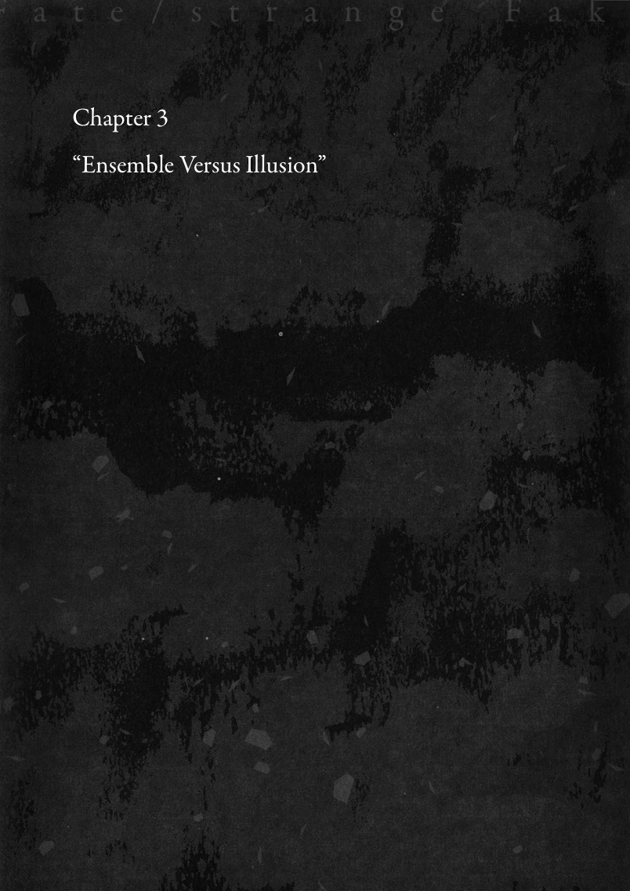
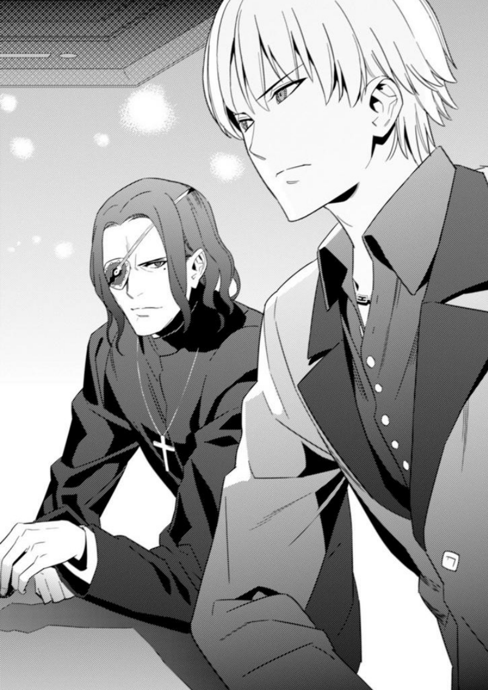
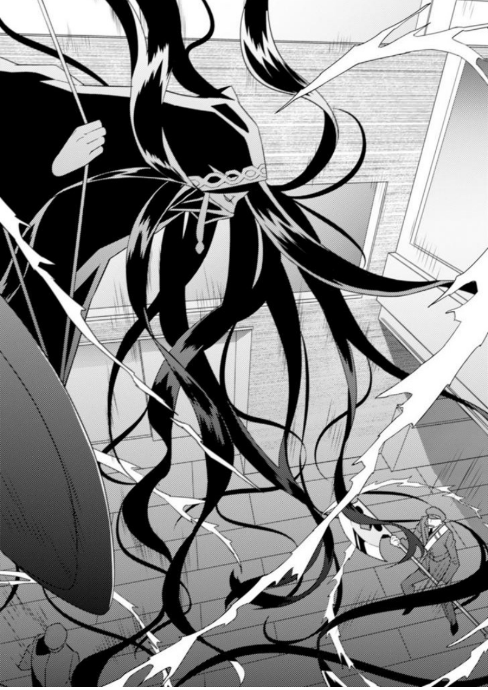
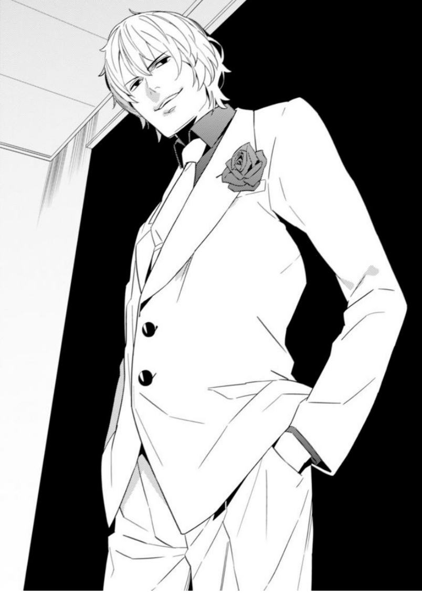

Capítulo 3: Dia 1, Madrugada
Cassino Crystal Hill.
"Tudo no preto."
Gilgamesh estava mais uma vez sentado à mesa de roleta, apostando como antes. Estava no processo de acumular uma quantia que nem o cassino podia ignorar, quando um terceiro entrou na disputa.
"Eu também; tudo no preto."
Gilgamesh lançou um olhar de lado para o homem sentado ao seu lado, que acabara de colocar uma montanha de fichas de alto valor sobre a mesa.
"O que temos aqui? Uma rêmora querendo roubar minhas riquezas?"
"Longe disso. Não tenho interesse no dinheiro; só esperava que você compartilhasse um pouco da sua sorte comigo", disse o homem do tapa-olho espalhafatoso com um sorriso largo. "Tenho um trabalho grande depois disso, e um empurrãozinho desses vai cair muito bem."
No instante seguinte, a bolinha da roleta caiu num número preto, e outra rodada de comemorações se ergueu entre os espectadores.
"Obrigado, agora a minha cota de sorte está garantida. Devolvo essas 'riquezas' ao seu jardim depois." O homem apanhou fichas do mesmo valor das de Gilgamesh enquanto falava.
Devolvo ao seu jardim.
Ao ouvir aquela escolha de palavras, Gilgamesh questionou o estranho: "Oh? Então estava me ouvindo falar sozinho antes?"
"Falando sozinho? Tem certeza disso?" Com um sorriso tranquilo, o homem voltou o olhar para Tiné, que ainda estava parada atrás de Gilgamesh. "Já passou da meia-noite. Não devia deixar a mocinha aí ir dormir logo?"
...!
Tiné soltou um suspiro ao receber aquela atenção súbita, mas, ao que parecia, continuava invisível para o crupiê e para os outros clientes. Ela inclinou a cabeça, perplexa com as palavras do homem do tapa-olho.
"Entendo. Parece que você não é um vira-lata comum. Diga seu nome", questionou Gilgamesh, abrindo um sorriso arrogante. O homem do tapa-olho havia despertado seu interesse.

"Hanza Cervantes", respondeu o homem, levantando-se e vestindo o casaco que carregava debaixo do braço. Num instante, um colar com cruz já pendia sobre seu manto preto. O crupiê e os outros clientes começaram a se perguntar: "O que um padre está fazendo num lugar desses?"
Em meio ao círculo de olhares confusos, o padre que se identificava como Hanza fez uma declaração que apenas Gilgamesh e Tiné entenderiam.
"Cheguei um pouco tarde, mas sou o supervisor desta guerra. Prazer em conhecê-lo."
Com isso, Hanza trocou as fichas por dinheiro e se dirigiu à saída. Antes que alguém percebesse, quatro mulheres já o acompanhavam. Somadas ao cenário do cassino, suas vestes clericais pareciam fortemente deslocadas.
"Então o senhor acabou vindo ao cassino de uniforme mesmo, Sr. Hanza", comentou uma das quatro mulheres enquanto saíam do cassino.
"Não tinha jeito. Recebemos a informação de que uma jovem que é uma das Mestres entrou no cassino com um homem que parece um Espírito Heroico. Não tive tempo de trocar de roupa. Mas... não contem ao mestre, certo?" Hanza deu de ombros ao se dirigir ao grupo de mulheres. "Vocês é que precisam ir se trocar. Ontem surgiu uma cratera no deserto. Quem sabe o que pode acontecer hoje à noite."
Ele dirigiu os passos para certa instituição da cidade.
"Vou me adiantar e me apresentar como supervisor...
"ao homem que, aposto, é um dos mentores que causaram essa guerra de brincadeira."
Delegacia. Sala de interrogatório.
O amanhecer ainda estava longe. Na sala de interrogatório da delegacia de Snowfield, uma entrevista bizarra estava em andamento.
"...Então, o seu nome é?"
"Se precisa de um nome para se dirigir a mim, por favor, chame-me de 'Saber'", respondeu o homem aristocrático algemado ao detetive de polícia carrancudo, sentado majestosamente na cadeira.
"Saber? Tipo um sabre de cavalaria? Muito esperto. E em que farmácia você arranjou essa espada que confiscamos de você, afinal?"
Uma pergunta sarcástica. O homem que se chamava Saber entendeu o sentido e respondeu com um sorriso alegre.
"Acho que vou usar esse 'direito de permanecer calado'. É a minha espada favorita; eu me complicaria se houvesse uma enxurrada de clientes e ela esgotasse."
"...Você fala bastante para um sujeito fantasiado de rei ou cavaleiro ou algo assim."
"Bastante perspicaz. Vejo que os oficiais deste país são de uma categoria elevada."
Saber soou impressionado. A resposta do detetive foi irritada.
"Você bateu a cabeça? Ou isso é droga?"
"Suponho que sim. Na juventude, chegaram até a me apelidar de Oce No. Para os que me cercavam, eu devia parecer excêntrico, mas eu tomava isso como elogio."
"Entendi. Então você acreditou no próprio personagem, se empolgou demais e destruiu a casa de ópera?"
"Sem dúvida me empolguei. É um fato que, ao perceber que havia sido invocado sobre um palco glorioso, transbordando luxo, fiquei de excelente humor", respondeu Saber aos policiais, agora com uma expressão séria. "O que vocês devem fazer é descobrir quanto custará, e quantos artesãos serão necessários, para reparar a casa de ópera. Informem-me, e eu compensarei o dano."
"Vai ter que perguntar isso ao promotor. Em primeiro lugar, um maluco como você por acaso teria a menor chance de bancar isso?"
"Se eu dissesse que não... estaria mentindo."
"Vai arrumar alguém para pagar por você, é?"
A roupa do homem chamado Saber parecia autêntica demais para ter sido comprada numa lojinha local de artigos para festa. Devia ter custado caro. O detetive responsável pelo interrogatório, tendo chegado a essa conclusão, tentava arrancar alguma informação do homem, quando...
"Se quiser, você mesmo pode financiar. Não esquecerei o favor."
"E para de me enrolar!"
O detetive bateu a palma da mão na mesa. Saber refletiu por um instante, resmungou e então abriu a boca para falar.
"Não vou dizer de graça. Posso mostrar um truque. Vocês terão a chance de ver algo que provavelmente está além dos limites do seu senso comum."
"Um truque de mágica?"
"Sim. Serei franco... é e tanto. Vocês vão ficar espantados."
Saber falava com um sorriso inocente, quase infantil. Os policiais trocaram olhares, sorriram com desdém e decidiram entrar na brincadeira daquele maluco.
"Ha. Nesse caso, por que não mostra o que consegue fazer nesse estado aí?", disse um dos policiais.
Saber assentiu sorrindo, ergueu as mãos algemadas e as sacudiu.
"Não tenho nada nas mãos. Concordam? Observem bem."
"...É."
"...E agora, eu vou desaparecer."
"Hã?"
Os policiais estavam confusos, sem compreender direito o que o homem queria dizer. Então... o corpo de Saber se dissipou como névoa. As algemas, deixadas suspensas no ar, caíram sobre a mesa com um estrondo metálico.
"...!?"
"Mas que..."
Os policiais estavam todos à beira do pânico. Seus olhos varreram o ambiente, e as mãos correram para as pistolas e armas de choque presas à cintura.
"Pra onde ele foi?"
"O que aconteceu?"
"Não abram a porta!"
O tumulto continuou... mas, assim que tiraram os olhos da cadeira do homem por um instante, ele já estava de volta à posição original. A única diferença em relação a antes era que as algemas agora jaziam vazias sobre a mesa.
"..."
Os policiais apontaram as armas para o homem, limpando o suor frio.
"N, não se mexa! Não se mexa!"
"Nem dei um passo. Eu disse, não disse? Que vocês ficariam espantados?", respondeu Saber. Então apagou o sorriso, como se dissesse que a brincadeira terminava ali, e se dirigiu aos policiais com uma expressão séria.
"Claro, eu poderia ter atravessado a parede e fugido, ou mesmo feito algo com vocês. Ou poderia ter saído da casa de ópera sem jamais ser visto."
O brilho ardente em seus olhos projetava uma aura intimidadora, como se ele estivesse prestes a devorar a alma dos policiais. Apesar disso, Saber se esforçou obstinadamente para provar que não lhes queria mal.
"Esta é a minha forma de demonstrar 'respeito'."
"'Respeito'...?"
"Antes mesmo da questão de reparar o crime de destruição, fazer outra pessoa assumir a culpa por ele seria uma desonra para um cavaleiro. Se eu me comportasse assim, jamais poderia voltar a encarar o rei fundador da minha terra natal, a quem amo e respeito. É justamente por isso que peço a vocês, que têm prova do meu poder, que entendam. Pretendo reparar os danos, mas não pretendo ser contido. Vim apenas testemunhar que aquela mulher é inocente."
Os policiais mergulharam em silêncio diante das palavras calmas de Saber. O conteúdo do que ele dizia era absurdo demais e deslocado demais para ser acreditado, mas uma aura intimidadora continuava emanando dele e os forçava a aceitar aquilo.
"Não eliminá-los à força é o mínimo de respeito devido às nobres intenções da lealdade de vocês ao dever e da dedicação de vocês à paz pública. Eu me submeterei à sua contenção até o amanhecer."
A palavra "respeito" saía da boca de Saber, mas os policiais olhavam para o homem à sua frente com medo. Como sapos sob o olhar de uma serpente, estavam imóveis. Ainda assim, pareciam de fato fiéis à sua missão, porque continuavam encarando Saber apesar disso.
Saber, talvez à vontade sendo alvo daquela hostilidade, falou com alegria.
"Ao amanhecer eu desaparecerei, então, bem, é melhor vocês pensarem desde já em como encobrir isso."
Por fim, com um sorriso inocente, acrescentou um comentário que só podia ser deboche.
"Se quiserem, podemos pensar juntos."
Delegacia.
Sala de reuniões.
Assistindo aos acontecimentos na sala de interrogatório pelo monitor em sua mesa, o chefe pressionou os dedos contra as têmporas e soltou um suspiro.
"...Ele parece completamente inconsciente do sigilo da Guerra do Santo Graal."
Então, franzindo a testa, deu instruções à secretária que estava ao seu lado.
"Exclua os policiais comuns de futuras observações e interrogatórios. Atribua isso aos membros do Clã Calatin. Faça tratamentos de alteração de memória em todo o pessoal que está com ele agora."
"Entendido."
A secretária fez continência. Enquanto isso, o chefe apanhou na mão a espada que jazia sobre a mesa.
"...Este é o Fantasma Nobre que confiscamos dele?"
"Sim, senhor. Não parece ser nada além de uma espada ornamental... mas isso talvez seja porque o nome verdadeiro dela ainda não foi liberado."
"Não, isto aqui realmente não passa de uma espada ornamental. Não sinto nem o menor traço de energia mágica."
Quando chegou a esse ponto, uma percepção súbita o atingiu.
"...Agora há pouco, quando ele assumiu forma espiritual, esta espada desapareceu?"
"Não saberia dizer, senhor... Eu também estava distraída com o monitor e não notei."
"Hmm..."
Segundo o relatório da equipe de investigação de Faldeus, Gilgamesh havia "disparado" centenas, talvez milhares, de Fantasmas Nobres na noite anterior. Agora, porém, não restava o menor vestígio deles. Claro, sempre havia a possibilidade de Faldeus estar mentindo, mas parecia mais provável que alguma força tivesse agido para recolher os Fantasmas Nobres disparados de volta ao tesouro de Gilgamesh.
"Ainda há muitas caixas-pretas na Guerra do Santo Graal. Ao que parece, teremos de pensar melhor na relação entre os Espíritos Heroicos e seus equipamentos."
Com os olhos fixos na "espada de Saber", que ele de fato segurava nas mãos e tocava, o chefe ponderou sobre o futuro.
"Depois vou pedir a opinião de Caster... embora duvide que ele me dê uma resposta direta."
Em seguida, devolveu a espada à mesa e dirigiu os passos para a entrada da sala de reuniões.
"Vou me encontrar com a mulher que parece ser a Mestre de Saber."
"Não é perigoso fazer contato direto?"
A secretária deixou sua inquietação transparecer.
"...Se eu empurrasse isso para um membro do Clã Calatin e acabasse sendo uma armadilha, ainda assim seria um risco", respondeu o chefe num tom gélido. "Se eu não tivesse a resolução de me expor ao perigo, jamais teria escolhido estas táticas."
Ao mesmo tempo. Em outra parte da delegacia.
Ayaka, que já havia terminado o interrogatório e fora jogada na área de detenção normalmente chamada de "cadeia" ou "cela", estava exausta. Deitada de costas sobre a cama, ainda de óculos, ela agora estava completamente isolada, cercada não por grades de ferro, mas por paredes e uma porta.
Era um quarto muito mais limpo do que Ayaka imaginara. Tirando o quão apertado era, a cela parecia até mais agradável do que acampar numa barraca ou se preocupar com mosquitos e carrapatos num hotel barato.
Ayaka já ouvira dizer que, nos Estados Unidos, não faziam distinções especiais entre cadeia, centro de detenção e prisão. Por outro lado, ela mesma também não entendia muito bem a diferença. De todo modo, isso não mudava o fato de que ela não sairia dali tão cedo. Resignada, fitou o teto e decidiu tentar descansar um pouco.
Mas a agitação não a deixava dormir. Sua cabeça estava cheia do conteúdo do interrogatório. Quem era ela? De onde viera? Por que estava ali? Parecia japonesa, então qual era o objetivo de sua visita à América? Uma longa ladainha de perguntas pensadas para sondar o passado de uma suspeita. Era um procedimento razoável e direto, mas Ayaka o achara insuportavelmente doloroso.
Ah, eu odeio isso. Odeio.
Só de lembrar já dói.
Não, não é isso. Não estou irritada.
Eu só não quero lembrar porque estou com medo.
Viajando por toda a vastidão deste país, ela havia conseguido esquecer o passado. Havia conseguido fugir dos próprios pecados.
Fazia um tempo que eu não a via, mas...
A garota de capuz vermelho que aparecera na casa de ópera. Só de imaginar o sorriso por baixo daquele capuz, o corpo inteiro de Ayaka se cobriu de suor.
Fizeram-na entrar em elevadores várias vezes enquanto a arrastavam pela delegacia, e em todas elas seus nervos estiveram à flor da pele. Ela já nem sabia dizer quantos anos haviam se passado. Fizera o possível para sequer entrar em prédios que tivessem elevador. Porque sabia que, no instante em que pusesse os olhos num elevador, a garota de capuz vermelho estaria parada atrás dela.
Os policiais pareciam incapazes de vê-la, mas Ayaka certamente havia sentido sua presença dentro do elevador da delegacia. Pálida de medo, Ayaka se certificou de não olhar em sua direção em hipótese alguma. Tudo isso enquanto repetia para si mesma: "Ela e eu somos pessoas diferentes. Isso não tem nada a ver comigo."
No fim, Ayaka não sabia dizer se a garota de capuz vermelho era um fantasma, uma ilusão mostrada por sua própria mente ou algo totalmente diferente. Tudo o que importava para Ayaka era o fato de que ela conseguia vê-la.
Ela devia ter vindo a esta cidade justamente para escapar daquela garota, então por que as coisas haviam acabado assim? Justo quando Ayaka se acalmava para voltar a pensar nisso, sua situação mudou de repente.
"Você está bem? Parece bem cansada."
Sem aviso, o homem da casa de ópera apareceu num canto da cela. "!?"
Assustada, Ayaka se ergueu de um salto. O homem que entrara sem ser notado tornou a falar com ela.
"Não se assuste tanto. Atravessar paredes não é nada se eu mudo para forma espiritual. Meu interrogatório foi colocado em espera. Me puseram numa cela um pouco mais adiante, então vim ver como você estava."
O homem atravessara com facilidade a cela de isolamento trancada. Talvez ele realmente fosse algum tipo de espírito. A distância entre os dois era muito menor do que havia sido até mesmo na casa de ópera, e Ayaka se levantou para ficar em guarda. Com as costas pressionadas contra a parede, abriu a boca para falar.
"...Achei que eu tivesse mandado você me deixar em paz", perguntou secamente.
"Você não é minha Mestre, é?" retrucou o homem.
"...Isso mesmo. Não sou sua Mestre nem nada do tipo."
Ayaka pretendia que sua resposta soasse como uma recusa ríspida, mas, ao ouvi-la, o homem sorriu como uma criança travessa.
"Acho que isso quer dizer que não preciso obedecer às suas ordens, então!"
"O quê..."
"Agora posso te aborrecer o quanto quiser. Vou cuidar pessoalmente de você, então se prepare."
O homem parecia animado. Ayaka balançou a cabeça. Já estava de saco cheio.
"Por favor, só me deixa em paz."
"Embora eu adore realizar os desejos das pessoas comuns sempre que posso, há um motivo pelo qual isso não dá."
"Um motivo?"
Diante da Ayaka desconfiada, o Espírito Heroico foi direto ao ponto.
"Acho que é por causa dos ritos embutidos nas suas tatuagens... Parece que as 'linhas' da minha energia mágica estão ligadas a você, em vez de ao mago que tinha meus Selos de Comando."
"...O quê?"
A forma brusca como o homem falou fez Ayaka franzir a testa.
"Em outras palavras, eu recebo energia mágica de você, e isso me permite me materializar neste mundo. Isso significa que nossos destinos estão ligados, mesmo que não seja uma relação adequada de Mestre e Servo", anunciou com leveza, antes de continuar para a Ayaka atônita. "Sem você, eu provavelmente nem teria conseguido me manifestar. Estou em dívida com você. Obrigado."
O homem estendeu a mão para cumprimentá-la. Ayaka a afastou com um tapa e fez uma careta.
"...Se está em dívida comigo, me deixe em paz."
"Isso eu me recuso a fazer! Vou cuidar bem de você. E também te importunar. Vou te salvar mesmo que você grite e esperneie dizendo que não quer isso. Afinal, se você morrer, eu desapareço, e então não poderei obter o Santo Graal."
"Vai me salvar de alguma coisa...?"
"Claro. Dos outros participantes desta guerra. Sendo Mestre ou não, enquanto suas linhas de energia mágica estiverem ligadas a mim, você naturalmente será um alvo."
"Isso é o pior..." Ayaka levou as mãos à cabeça.
"Pense pelo lado positivo", disse o homem. "Comparado, por exemplo, a ter toda a pele arrancada, ser esfregada com sal e ainda estar exatamente na mesma situação, você está muito melhor porque não está sentindo dor."
"Você dá uns exemplos bem extremos..."
"Já me disseram muitas vezes que eu sou extremo em tudo que faço."
O homem parecia envergonhado, como se tivesse acabado de receber um elogio. Ayaka, talvez percebendo que qualquer coisa que dissesse seria inútil, decidiu sondá-lo e mudou de assunto.
"Você é nobre ou coisa assim, não é? Ser preso pela polícia não fere o seu orgulho nem nada?"
"É muito melhor do que quando eu fiquei preso numa fortaleza nas montanhas. Posso sair para dar um passeio quando quiser. Além disso, se você tivesse sido punida no meu lugar, isso teria ferido muito mais o meu orgulho. Ah, mas não estou te ajudando só por causa do meu orgulho."
"Eu já disse que você não precisa me ajudar..."
Ayaka soltou um suspiro exasperado. O homem continuava se dirigindo a ela com total naturalidade, completamente diferente do discurso que fizera em cima do caminhão de bombeiros.
"Por enquanto, me chame de Saber. Não revelar meu nome à minha benfeitora seria desonroso, mas cedo ou tarde encontrarei uma oportunidade de lhe dizer meu verdadeiro nome."
Saber então voltou-se para Ayaka com um ar sério.
"Agora você poderia me dizer algumas coisas? O que estava fazendo num lugar daqueles? O que são essas tatuagens?", perguntou. Depois de fazer uma expressão preocupada por um instante, porém, balançou a cabeça e fez uma pergunta mais importante.
"...Desculpe. Antes, por favor, me diga o seu nome."
Um corredor dentro da delegacia.
O chefe de polícia, sem saber que Saber e Ayaka conversavam na cela dela, apressou ligeiramente o passo na direção das celas de isolamento. No entanto, assim que chegou ao elevador, uma funcionária da delegacia veio correndo até ele.
"Ah, chefe, aí está o senhor! Tem um visitante querendo vê-lo."
"Diga para ele... Não, espere."
Ele pretendia adiar se fosse um político ou alguém desse tipo, mas também havia a possibilidade de ser Faldeus ou Kuruoka.
"...Quem é?"
"Bom... ele se diz padre, mas me pareceu bem suspeito..." Um padre.
O chefe franziu o cenho. Outra possibilidade lhe ocorrera. Logo aquela possibilidade virou suspeita, e as palavras seguintes da funcionária confirmaram isso.
"Tudo o que ele diz é: 'Diga a ele que é sobre um cálice roubado do Japão. Ele vai entender.'"
Na cidade.
No telhado de um prédio vizinho especialmente alto, a mulher Assassin concentrava a mente na delegacia abaixo, ajustando a respiração em silêncio.
Ela havia buscado informações pela cidade e descoberto que o Espírito Heroico Saber fora levado para a delegacia. Depois disso, bastaria entrar sorrateiramente e realizar o assassinato, desta vez de forma perfeita, ou era o que a mulher Assassin pensava. Agora, porém, depois de observar a delegacia, um fato aterrador se impôs a ela.
Um grande número de barreiras místicas havia sido erguido no local da delegacia, transformando-o numa fortaleza que barrava completamente todos, exceto os que se aproximassem pelas entradas legítimas. Mesmo que ela apagasse sua presença e tentasse entrar pela porta da frente, havia cinco ou seis camadas de barreiras projetadas justamente para expor esse tipo de subterfúgio. O Campo Limitado fora construído com tanta habilidade que permanecia oculto até dos magos que estavam por perto. Ela passara por ali durante o dia e não notara nada.
Como resultado de uma observação mais focada, detectou a "presença" de vários magos dentro do prédio. Não conseguia acreditar. Aos olhos dela, as pessoas da cidade eram esmagadoramente "infiéis", mas o fato de magos, vistos como "hereges" por tantas religiões, estarem de posse dos órgãos judiciários e administrativos da cidade era difícil de aceitar de imediato. Considerando a influência da Torre do Relógio, isso provavelmente não era raro na era moderna, mas ela não tinha ligação alguma com a Torre do Relógio, e aquilo a chocou.
Embora pertencessem a seitas diferentes, havia nessa cidade pessoas que adoravam o mesmo deus que ela. E magos, que nem sequer eram infiéis, tentavam governá-las das sombras. Ela não podia fechar os olhos para isso.
Era impensável que uma organização que havia erguido um Campo Limitado em escala tão grande não estivesse envolvida na Guerra do Santo Graal travada naquela cidade. Mais importante que tudo, seu inimigo, o Espírito Heroico Saber, estava lá dentro. Ela puxou fundo o ar e resolveu invadir o acampamento inimigo.
O chefe de seu tempo era capaz de atravessar praticamente dançando qualquer barreira. Ela sabia que não possuía tal habilidade. Tudo o que podia fazer era usar as técnicas que desenvolvera em imitação às gerações anteriores, e lutar.
Ela continuaria correndo até dar de cara com uma parede. Nada mais importava. Se até ela, em sua imaturidade, conseguisse realizar alguma coisa, então sua vida teria significado.
Não, ela não precisava de significado. Não precisava pensar; só precisava romper adiante.
Digeriu sua silenciosa determinação sob as vestes negras e deu um salto enorme para o ar. Enquanto caía, desligou à força todas as barreiras. Os oponentes notariam sua presença, mas ela não se importava. Eliminaria todos os inimigos. Tendo se decidido por isso, transformou-se numa bala de canhão arremessada contra a delegacia.
Alguns segundos depois, todas as barreiras espalhadas no céu acima da delegacia se despedaçaram de uma vez...
E assim se ergueu a cortina da guerra daquela fanática. Ela havia resolvido lutar sozinha até o fim.
Se havia cometido um erro de cálculo... era o fato de que, na verdade, não estava sozinha. Tinha um reforço demoníaco. Ainda assim, ela jamais desejaria a ajuda de uma criatura assim.
Em frente ao cassino Crystal Hill. Distrito de entretenimento.
"Um cassino, é? Parece divertido."
Flat, que estava completamente desperto desde que fora entrevistado em frente à casa de ópera, vagava pelo distrito de entretenimento. Em meio às luzes deslumbrantes da Main Street, sua atenção foi capturada pelo néon ainda mais chamativo do cassino.
"Até onde eu sei, cassinos são proibidos para menores de 21 anos neste estado", repreendeu Jack the Ripper, ainda em forma de relógio de pulso.
"Ah, então eu não posso entrar. Que pena. Faz um tempão que eu não jogo."
"Você já entrou em um antes?"
Jack soou surpreso. Flat relembrou o passado com nostalgia ao responder.
"Sou de Mônaco, sabe. Havia um barco-cassino enorme flutuando no mar perto da minha cidade natal. Eu costumava jogar lá. Também tinha limite de idade, mas, depois de umas coisas aqui e ali, o dono me deu permissão especial... Em troca, ele pediu que eu mostrasse que tipo de magia eu sabia usar, então eu mostrei."
"...Você realmente vive de um jeito diametralmente oposto à minha imagem de um mago."
"Ora, você me lisonjeia."
"Não, não me cabe opinar. Se é assim que escolhe viver, então viva como quiser. Só rezo para que os outros magos não deem cabo de você."
Jack soou exasperado, mas algo na história de Flat parecia ter despertado seu interesse. Ele decidiu continuar perguntando sobre o barco-cassino.
"Ainda assim, se ele pediu para ver sua magia... o dono também era mago?"
"Não. Bem, aparentemente ele era."
"...'Era'?" O mostrador do relógio inclinou-se em perplexidade diante daquela estranha escolha de palavras.
"É. Ele deixou de ser mago e virou um Apóstolo Morto."
"Apóstolo Morto?"
"Um sugador de sangue... Ah, se eu disser 'vampiro', você entende?" O mostrador de Jack se inclinou ainda mais diante da declaração abrupta de Flat.
"É verdade que existem teorias de que eu próprio era um vampiro... mas, mesmo para um mago, isso não é um pouco ocultismo de série B demais?"
"Jack the Ripper ressuscitado nos tempos modernos é muito mais ocultismo de série B do que isso."
"Humph."
O Santo Graal fornecia aos Espíritos Heroicos o conhecimento mínimo necessário para lutar na Guerra do Santo Graal. Se Jack não sabia sobre vampiros, isso provavelmente significava que o Graal havia julgado que informações sobre eles eram irrelevantes para o conflito. Pelo menos foi o que Flat pensou. Então decidiu dar a Jack uma explicação simples.
"Vampiros existem mesmo. Bem, falando em termos místicos, chamam eles de sugadores de sangue ou Apóstolos Mortos. Tem gente que é mordida por um sugador de sangue e depois de alguns anos vira um também, mas também tem todo tipo de ex-mago e afins que viram Apóstolos Mortos por conta própria, correndo atrás de imortalidade, da Raiz e esse tipo de coisa."
"Então magos podem virar vampiros?"
"Só entre nós, tem até um entre os figurões da Torre do Relógio. Um Apóstolo Morto que usa Magia Verdadeira."
"Nossa..."
Depois da exclamação de surpresa, Jack alfinetou Flat com sarcasmo.
"Você, claro, provavelmente viraria vampiro sem pensar duas vezes, só porque 'é estiloso'."
Mas a resposta de Flat foi inesperadamente séria.
"Eles são estilosos, mas eu não sei se gostaria de virar um. Quer dizer, tem aquela compulsão de sugar sangue e outras coisas para levar em conta."
"Essa me surpreendeu. Não teria imaginado que você tinha um senso moral tão comum."
"Além disso, sabe como é, é ineficiente."
"...?"
Ignorando a aparente dúvida de Jack, Flat apontou para outra parte da cidade e disse: "Olha só, falando no diabo e coisa e tal."
"O que foi?"
O olhar de Flat repousou sobre um jovem parado na calçada da Main Street, de frente para a delegacia. Ele tinha um ar estranhamente despreocupado. Mantendo os olhos fixos naquele jovem, Flat declarou casualmente:
"Aquele cara ali, olhando para a delegacia... É um Apóstolo Morto. Provavelmente."
Delegacia. Saguão.
"Você é o chefe Orlando Reeve?"
Àquela hora avançada da noite, o saguão da delegacia estava quase vazio de gente comum. Só se via, de vez em quando, algum policial do turno da noite e os delinquentes juvenis que eles traziam para lá.
O saguão da Delegacia Central de Snowfield era consideravelmente mais espaçoso do que o de uma delegacia comum, formando um vazio que alcançava até o terceiro andar. As partes expostas dos corredores do segundo e do terceiro andares haviam sido incorporadas ao design interno do prédio. Ao contrário dos saguões de visual moderno de algumas delegacias californianas, aquele passava a impressão solene de um castelo que fora forçado a se modernizar. De pé no centro daquele espaço estranhamente opressivo, o homem irradiava uma presença singular.
Ele estava vestido de padre e usava um tapa-olho espalhafatoso. Só por estar dentro da delegacia, naturalmente atraía os olhares dos poucos transeuntes. O chefe, porém, ficou diante do misterioso padre sem hesitar e respondeu:
"Sou Reeve... E você?"
"Hanza Cervantes. Um... 'supervisor' despachado para a igreja central de Snowfield. Imagino que você saiba o que quero dizer."
"Acho que não sei do que está falando", respondeu o chefe sem expressão. Hanza abriu um sorriso largo e espalhou as mãos.
"Se pretende insistir que 'magia é só um hobby' ou que 'meus subordinados fizeram isso por conta própria' com tantas barreiras erguidas assim, eu não vou impedi-lo. Mesmo que o seu Servo seja eliminado, tudo o que você vai perder é um esconderijo seguro. Com certeza você também dá valor à própria vida, não?"
"..."
As principais funções do supervisor da Guerra do Santo Graal eram observar o andamento da guerra e ocultar magia e milagres dos olhos mundanos. Além disso, porém, também lhe cabia "abrigar os derrotados".
Se um Mestre ainda tivesse vontade de lutar depois que seu Servo fosse derrotado, ele poderia fazer um novo contrato com um Servo que também tivesse perdido seu Mestre e estivesse apenas esperando a dissolução. Assim, voltaria à linha de frente. Para impedir isso, não eram poucos os magos que tentavam acabar com Mestres que haviam perdido seus Servos. Até um Mestre que já não tivesse vontade de continuar podia se ver visado pelos outros participantes. Garantir a segurança desses Mestres era uma das funções da Igreja Sagrada e de seu supervisor.
Claro, mesmo que o chefe aparecesse mais tarde e dissesse "na verdade eu sou um Mestre, então me ajudem", a política da Igreja seria oferecer abrigo, de modo que a ameaça de Hanza não passava de uma provocação ou um blefe. O chefe, porém, pareceu interpretar aquela fala de maneira ainda mais sagaz e estreitou os olhos com cautela. Hanza, em contraste, deu de ombros com tranquilidade.
"Ops. Não vim fazer perguntas capciosas. Eu já sei que você é um fora da lei sem qualquer vínculo com a Torre do Relógio, chefe Orlando Reeve. Posso acrescentar que você também é culpado de um acúmulo antinatural de pessoal. Usando seus bons ofícios, você vem reunindo oficiais de toda parte desde muito antes de esta guerra começar. Só tenho indícios circunstanciais, mas eu diria que basta."
"...Não imaginei que vocês tivessem investigado tão a fundo em meros poucos dias. Impressionante."
"Os informantes da Igreja é que são impressionantes. Se tem tempo para me elogiar, experimente fazer doações generosas no culto do próximo domingo."
O chefe não sabia dizer se o padre brincalhão estava sendo sarcástico.
"De todo modo, dificilmente é assunto para se discutir aqui. Vou levá-lo à sala de recepção."
"Acho melhor não. Não parece que vocês tenham qualquer intenção de jogar limpo com a Igreja, e eu também não tenho a menor vontade de me atirar na barriga de uma besta tão suspeita assim."
Sem mais cerimônia, Hanza sentou-se numa das cadeiras do saguão. Olhou para a televisão de tela plana presa a uma coluna antes de voltar a falar.
"Já faz um tempo que estão mostrando imagens do acidente... ou incidente... na casa de ópera. Tem um sujeito esquisito nelas. Se aquilo ali é mesmo um Espírito Heroico de verdade, então isso significaria que vocês já falharam em manter o ritual em segredo. Não podem dizer que a gente não avisou. Se sentirem vontade de fazer um pedido choroso de desculpas, posso passar os números de alguns figurões da Assembleia do Oitavo Sacramento."
Hanza estava sorrindo, mas seu jeito provocador era abertamente hostil. O chefe respondeu com um olhar gelado.
"Não há motivo para preocupação. Nenhuma pessoa comum seria capaz de ver aquilo pelo que realmente é."
"É mesmo? Então vamos mudar de assunto. Aquele Espírito Heroico e sua Mestre estão aqui?"
"...E se eu disser que sim?"
"Eles não constam nos relatórios da Igreja. Gostaria de verificar ao menos seus rostos. Cumprimentar, se puder. E, se a Mestre for uma mulher, eu gostaria de convidá-la para jantar; pagar uma jambalaya de jalokia ou algo assim. Não sei quanto a você, mas a mocinha ao seu lado também pode vir."
A secretária, ainda sem expressão, rejeitou a oferta repentina e lançou um olhar ao chefe. O chefe soltou um longo suspiro e declarou sem rodeios ao persistente Hanza:
"Deixe-me ser claro: nosso ritual é diferente do de Fuyuki. Não temos a menor intenção de chegar a um acordo com vocês. Então vá rezar como um bom padre."
"Se a conversa acabou, não preciso que me mandem ir rezar na igreja."
"Você não vai rezar numa igreja. Vai rezar bem aqui", disse o chefe ao sempre tagarela Hanza.
"Oh?"
"...Você disse que aquele Servo e sua Mestre 'não constam nos relatórios da Igreja', não disse?"
A voz do chefe foi perdendo gradualmente qualquer calor.
"Quanto vocês sabem? Possuem informações que nem nós temos? Enquanto não cobrirmos essa diferença de inteligência, não temos como mandá-lo para casa."
"Desculpe, mas eu não consigo dormir sem meu travesseiro. Se eu correr lá em casa para pegar, você se importa?"
"Hanza Cervantes, foi esse o nome?
Você cometeu um erro." O chefe continuou, impassível, sem dar ouvidos às piadas de Hanza.
"Você não considerou que este saguão já está dentro da minha barriga?"
O tom do chefe ficou ainda mais frio. Foi quando Hanza percebeu: as pessoas comuns que vira esporadicamente pelo saguão haviam desaparecido por completo.
Então vocês limparam a área, é?
Até os policiais e recepcionistas que antes circulavam pelo lugar haviam sumido. No lugar deles, uma sequência de oficiais de polícia surgiu pelas diversas entradas ligadas ao saguão. Todos encaravam Hanza friamente e se alinharam de modo a cercá-lo.
Esses caras... não são policiais comuns.
Bastava observar a postura e o modo como andavam para perceber que tinham recebido mais do que treinamento policial padrão. Ao mesmo tempo, era óbvio que não estavam sob lavagem cerebral; estavam naquele espaço "esvaziado" por vontade própria.
Ao ver em que situação se encontrava, Hanza, ainda sentado na cadeira, ergueu os olhos para o rosto do chefe.
"Se vão me prender, qual é a acusação?"
"Acredito que, antes, você disse 'com certeza você também dá valor à própria vida'... Senti perigo nas suas palavras e na sua conduta. Recebi uma ameaça inequívoca."
"...Você vê TV demais, chefe."
"Você não tem o direito de permanecer calado. Nada do que disser será usado num tribunal. Você não tem direito a advogado, e nenhum lhe será fornecido. Prepare-se."
Os oficiais começaram lentamente a apertar o cerco enquanto o chefe recitava aquilo com sarcasmo.
"Fazer da gente inimigo não é exatamente uma estratégia vencedora. Pelo visto eu não posso fazer nada com você, mas, quando se resolve intimidar um sujeito assim unilateralmente, a relação entre as nossas organizações pode azedar."
"Concordo. É precisamente por isso que eu gostaria que compartilhássemos informações de forma amistosa."
O chefe baixou o olhar para Hanza. Seu olhar estava longe de ser amigável.
"Você não deveria assustar um cidadão comum e de bem desse jeito. Eu posso muito bem fazer escândalo."
Hanza retribuiu com um olhar duro e um sorriso provocador. A situação parecia ter chegado ao limite crítico quando... o celular do chefe vibrou, e o clima da sala relaxou.
Franzindo o cenho, o chefe deu um passo para trás e tirou o telefone do bolso. Naturalmente, sem baixar a guarda em relação a Hanza. Com cautela, levou o aparelho ao ouvido; então uma voz alegre demais para a ocasião pôde ser ouvida.
"Ei! Como você está, bro?"
"Se tem algum assunto comigo, podemos falar depois. Estou no meio de uma coisa."
Ao ouvir a voz de Caster, o chefe respondeu com secura. Caster, porém, lançou um aviso claro sem nem escutar a voz de seu Mestre.
"Sai daí agora mesmo, bro. Ou então se prepara para encarar o inimigo com tudo o que tiver. Você cortou a telepatia completamente do seu lado, então tive de te alcançar com as bênçãos da civilização."
"O que quer dizer com isso? Como sabe uma coisa dessas?"
"Segredo profissional. Bem, boa sorte!"
E a ligação foi encerrada. O chefe franziu a testa.
"Francamente, esse homem é difícil de lidar."
Ainda assim, aquilo tampouco parecera um trote. O chefe já sabia muito bem que a capacidade de Caster para reunir informações era anormal. Mas o que significava o fato de ele agora ter evoluído a ponto de lançar avisos em tempo real? Mal a dúvida cruzou sua mente, porém, quando...
Crac.
Todas as veias de seu corpo soltaram um lamento distorcido. Para ser preciso, foram os Circuitos Mágicos que percorriam o seu corpo.
As barreiras... merda! O que está acontecendo?
As barreiras antimagos, erguidas em múltiplas camadas, haviam sido destruídas num instante, com a violência de um míssil perfurando um abrigo.
Imagine atravessar o sistema de segurança de um banco ou de um museu sem dispará-lo uma única vez e realizar um roubo com sucesso sem sequer deixar perceberem que houve infiltração. Era esse o tipo de rompimento de barreira que o chefe tinha em mente.
Aquilo, porém, era como uma bomba acertando o prédio e abrindo um buraco na parede para servir de entrada. Em outras palavras, quem quer que tivesse rompido a barreira não se importava nem um pouco em ser detectado. Não era uma infiltração; era um "impacto".
"São amigos seus?"
O chefe lançou um olhar duro para Hanza, mas o padre apenas deu de ombros com o ar mais inocente do mundo.
"Eu até gostaria que fosse", disse ele enquanto erguia o olhar para o teto, "mas, quando os meus amigos aparecem, vêm pela entrada da frente ou pela porta dos fundos, não lá de cima no céu."
"..."
Ele consegue sentir isso? O chefe também sentira que a barreira em volta da parte superior da delegacia havia sido rompida. Ainda que soubesse que devia ter ocorrido algum tipo de ataque, porém, não percebera nenhum som nem reverberação do impacto. Afinal, o que tinha acontecido? Só teve um instante para se perguntar...
Antes que todas as luzes do prédio se apagassem, mergulhando todos numa escuridão profunda.
Uma cela de isolamento.
"Finalmente você me disse seu nome. Obrigado, Ayaka. Um dia eu retribuirei esse favor."
Saber, que havia usado todo o seu repertório e enfim conseguira arrancar de Ayaka o seu nome, prosseguiu com o interrogatório exibindo um sorriso alegre.
"E então? O que está fazendo numa cidade como esta?"
"Eu..."
Contar tudo provavelmente seria a forma mais rápida de fazer aquele homem calar a boca, pensou Ayaka, e se resignou a narrar suas experiências.
"Comecei no Japão, fugindo de cidade em cidade."
"Você estava fugindo de alguma coisa?"
"Eu nem sei por quantos anos fiz isso. Só fui vagando de lugar em lugar..."
Mordendo o lábio, aparentemente menos por irritação do que por medo, Ayaka fez um relato indireto do próprio passado.
"No fim, acabei voltando para a cidade onde tudo começou. Havia um castelo estranho na floresta e..."
Nesse instante, a luz da cela de isolamento se apagou de repente.
"Hã?"
"Hm?"
Saber e Ayaka olharam ao redor ao mesmo tempo, mas não havia claridade nem mesmo do lado de fora da pequena janela na porta da cela. Perceberam que a delegacia inteira havia ficado às escuras.
"...Falta de energia? Daqui a pouco devem passar para a alimentação de emergência.
Acho." Ayaka soou um pouco assustada no escuro. A voz cautelosa de Saber respondeu em eco.
"...Se for apenas uma falta de energia."
Delegacia. Interior.
A mulher Assassin havia inutilizado tanto o quadro de força principal quanto o gerador de emergência em rápida sucessão, mergulhando a delegacia inteira na escuridão total. Ela se fundiu com aquela treva, varrendo o prédio como o vento. Ocasionalmente cruzava com policiais e detetives patrulhando com lanternas, mas ela era uma sombra furtiva, sempre fora da luz e sem fazer o menor som. Tinha a delegacia inteira em suas mãos.
Para desafiar aquele Espírito Heroico, precisarei arriscar a própria vida.
Ela se preparou mentalmente enquanto corria pelos longos corredores da delegacia. O treinamento especial ao qual fora submetida fazia com que não precisasse de luz alguma para se mover. Sentindo o movimento do ar, o fluxo de energia mágica e o eco dos sons do vento, ela era capaz de enxergar o ambiente com o corpo inteiro e até perceber o fluxo de energia dentro dele. Essa era outra das artes alcançadas pelos grandes chefes: "Sensibilidade Meditativa: Zabaniya". Uma habilidade sensorial sobre-humana que lhe permitia sentir correntes de poder — como energia mágica, água, eletricidade ou vento — naturais ou artificiais, como se fossem parte do próprio corpo.
Foi usando esse poder que localizou a fonte de energia da delegacia e a destruiu. Feito isso, dirigiu-se ao ponto de maior concentração de energia mágica. Descendo as escadas como uma cachoeira, por fim chegou a um espaço cheio de correntes desordenadas desse poder. Ou seja, à maior área da delegacia: o saguão principal.
"...!"
Quase no mesmo instante em que a mulher Assassin saltou para dentro do saguão, o homem uniformizado no centro dele lançou magia para iluminar o espaço, igualando a posição das luzes já existentes.
Um mago!
Assassin imediatamente se desmaterializou, mas nem mesmo ela podia competir com a velocidade da luz. No instante anterior ao desaparecimento, a imagem de Assassin se imprimiu nos olhos de vários presentes, inclusive os do mago.
Uma sombra se dissolvendo na luz. Não havia outra forma de descrever a figura fantasmagórica que existira por um momento na entrada.
"O quê...?"
Um Servo...?
O chefe de polícia era um Mestre com Selos de Comando; mesmo aquele vislumbre momentâneo bastou para que tivesse certeza de que o que vira era um Servo.
Aquilo não é Saber. Foi só um relance, mas aqueles atributos... Assassin!?
Quando um Mestre olhava diretamente para um Servo participante da Guerra do Santo Graal, conseguia obter certa quantidade de dados. A forma assumida por essas informações era otimizada para a mente do Mestre em questão; podia ser uma página de grimório ou uma folha de pergaminho. Claro, não era possível discernir o verdadeiro nome de um Servo, mas era possível ler seus parâmetros físicos gerais e algumas de suas características especiais.
Fora só um instante, então ele não conseguira interpretar a maior parte do que vira, mas pudera sentir que aquele Servo se destacava em furtividade e espionagem. Até a aparência — toda negra da cabeça aos pés, pelo pouco que conseguira ver — sugeria Assassin.
Humph... Então algum Mestre viu Saber na TV e decidiu mandar Assassin. Não podemos fazer nada físico contra um Servo enquanto ele está em forma espiritual, mas é difícil imaginar que vá continuar assim por muito tempo.
Um Servo em forma espiritual era incapaz de tomar medidas ofensivas ou defensivas. Se um Mestre ou outro mago possuísse meios de atacar um corpo espiritual, o Servo corria o risco de ser aniquilado unilateralmente. Consequentemente, permanecer em forma espiritual nas proximidades de Servos e Mestres hostis não era uma estratégia vencedora. O momento necessário para se rematerializar também podia criar uma abertura fatal numa batalha decidida em instantes.
É melhor presumir que já se materializou e está escondida em algum lugar, concluiu o chefe, antes de lançar um olhar cauteloso ao redor. Havia incontáveis lugares onde se esconder no átrio do saguão, inclusive nas partes expostas dos corredores do segundo e do terceiro andares.
Seus Selos de Comando estavam escondidos sob as luvas. Qual era a chance de ele ter sido identificado como Mestre? No pior cenário, pensou o chefe, o Servo podia ter vindo atrás dele, e não de Saber. Enquanto lutava para planejar o próximo movimento, Hanza, que havia ido parar atrás de um pilar num canto do saguão sem que ninguém notasse, estreitou brutalmente suas opções.
"Oh? Aquele era o seu Servo, chefe?" Uma pergunta casual.
O chefe lançou um olhar fulminante a Hanza, imediatamente entendendo o que aquilo significava.
"Filho da... Está extrapolando a sua jurisdição como supervisor."
"Achei que você não precisava de supervisor da Igreja."
Hanza abriu um sorriso malicioso, cruzou os braços e se encostou no pilar, como se quisesse enfatizar que era apenas um espectador.
"Só uma pequena resistência passiva contra um chefão que adora esmagar o cara pequeno."
Um padre infiel.
Se ele fosse um supervisor vindo confirmar a existência do Santo Graal, então era um alvo do qual Assassin devia se precaver. Se, por outro lado, ele fosse mesmo uma parte neutra e tivesse sido enviado apenas para verificar a autenticidade do Graal, então ela não tinha mais motivo para tirar-lhe a vida do que tinha em relação a qualquer outro infiel da cidade.
O "chefe", porém, ela não podia ignorar. O supervisor lhe perguntara sobre "seu Servo". Levando em conta a barreira de múltiplas camadas erguida ao redor da delegacia e o fato de ele ser um Mestre e uma pessoa de posição, até ela, ignorante quanto ao governo constitucional, podia facilmente supor que o homem que parecia ser o chefe daquela delegacia provavelmente estava envolvido de forma fundamental naquela Guerra do Santo Graal.
Em sua mente, as prioridades mudaram. Naquele momento, o chefe de polícia bem diante dela passou a ter precedência sobre o cavaleiro da casa de ópera. Ela o capturaria primeiro e então arrancaria dele informações sobre os mentores daquela Guerra do Santo Graal. O julgamento viria depois, decidiu.
Assassin se materializou num ponto cego do corredor do terceiro andar e apontou para o chefe. Preparou o Fantasma Nobre mais adequado para capturar o mago. Ela ainda acreditava que o chefe era seu único inimigo.
Até que uma flecha impregnada de brutal energia mágica disparou pelo corredor em sua direção. "...!"
Ela veio de um ponto completamente cego. Se não fosse pelo sentido aguçado que havia adquirido para correr no escuro, ela nem sequer teria percebido que estava sendo atacada antes de ser atingida.
Captando a perturbação da energia mágica próxima e o rangido quase imperceptível de um arco sendo retesado, ela percebeu que havia sido visada.
A mulher Assassin torceu o corpo, flexionando as articulações muito além do que pareceria humano, e desviou da flecha que vinha fechando sobre o seu coração. Ela seguiu em linha reta pelo corredor e acertou a parede oposta do ponto de vista da atiradora.
O impacto provocou uma destruição inacreditável. A parede explodiu em pedaços. O cômodo além dela pôde ser visto por meio de um buraco aberto diretamente no concreto reforçado.
Ela não sabia como aquilo destruíra a parede. Tudo o que sabia com certeza era... que o golpe fora poderoso o bastante para derrubar qualquer humano, e possivelmente até um Espírito Heroico mediano.
Uma cela de isolamento.
"...Que barulho foi esse?", perguntou Ayaka, inquieta, na escuridão. Os estrondos pareciam o som de algo se quebrando — distante, mas definitivamente dentro do mesmo prédio.
"Talvez alguém tenha vindo atrás de você?"
"Acho que é possível."
Pequenas luzes surgiram ao redor deles enquanto Saber falava. Um brilho suave, como o de vaga-lumes, encheu a cela de isolamento e iluminou o olhar vazio de Ayaka.
Gotas d'água do tamanho de bolinhas de gude pairavam no ar. A luz vinha diretamente delas.
"Você pode usar Magia Verdadeira...?"
"Não Magia Verdadeira; magia."
"Não acho que entenda a diferença."
"Magia é o que os humanos conseguem realizar por conta própria com tempo e esforço suficientes. Magia Verdadeira cria milagres além do alcance do homem moderno... ou pelo menos foi o que me disseram. Eu mesmo não sou mago, então não conheço os detalhes, mas aparentemente o avanço da ciência transformou a maior parte da Magia Verdadeira em magia."
Saber falou como se aquilo não tivesse nada a ver com ele. Ayaka encarava com perplexidade as gotas d'água que serviam de luz.
Diante disso, Saber balançou a cabeça, um pouco constrangido.
"Só para constar, não fui eu que fiz isto."
"O quê..."
Antes mesmo que Ayaka terminasse a pergunta, Saber desapareceu.
"Ei!"
Sozinha na cela com as gotículas brilhantes, Ayaka se jogou na cama com um suspiro. Alguns segundos depois, ergueu-se de novo.
A porta da cela de isolamento se abriu com estrondo, e Saber entrou como se nada de extraordinário tivesse acontecido. Chacoalhou um molho de chaves e abriu um sorriso enorme.
"Peguei as chaves emprestadas em segredo."
"'Emprestadas'...?"
"Ah, uma fuga da prisão. Hehe. É um pouco empolgante!"
"Cadê a sua honra de cavaleiro?"
Ayaka soou exasperada.
"Claro que ainda pretendo reparar os danos ao teatro. Também tenho a intenção de cumprir minha promessa de permanecer sob custódia dos oficiais daqui até o amanhecer. Antes disso, porém, vou levá-la para um lugar seguro", declarou Saber, com os olhos brilhando de empolgação.
"...Você já pensou que talvez esta cela seja o lugar mais seguro para mim?"
"Tenho minhas dúvidas. Esta delegacia é estranha. Pelo visto há Campos Limitados espalhados por toda parte."
Saber falava como se estivesse repetindo algo que alguém lhe dissera. Ayaka franziu a testa.
"'Pelo visto'? Quem disse isso?"
Saber segurou a porta da cela aberta com um sorriso destemido. Não havia sinal de carcereiros lá fora. Só se ouviam gritos e protestos vindos dos outros detentos.
Saber segurou a mão de Ayaka e saiu puxando-a para fora do bloco de celas. As gotículas brilhantes flutuavam à frente.
"Bem, veja, é complicado."
"Eu realmente não entendo... O que quer dizer com 'Campos Limitados'? Tem magos nesta delegacia?"
"Mais do que isso; pelo visto eles fazem parte da própria construção do prédio. Eu estava preocupado com a possibilidade de, no pior dos casos, todo mundo dentro daqui ser mago. Pelo interrogatório de antes, porém, isso não parece ser o caso." A expressão de Saber de repente se tornou séria. "Mas esta delegacia definitivamente foi construída para magos. Se está ligada à Guerra do Santo Graal, então esta confusão não nos traz nada de bom."
"Por quê?"
"Eles provavelmente pretendiam nos oferecer uma aliança, ou ao menos arrancar alguma coisa de nós... Mas, se aquelas vibrações foram um ataque de outro Servo, então é provável que tentem se livrar de você antes que tenha a chance de se voltar contra eles. Pelo visto, há um bom motivo para pensar assim."
"O que quer dizer com 'bom motivo'?"
Saber se calou por alguns instantes, mas, quando alcançou um ponto já um pouco afastado das celas, começou a resmungar baixinho. Soava como se estivesse respondendo a alguma objeção.
"Ora essa... Coisas assim você me diz antes. Se eu soubesse, já teria cortado a porta e tirado ela dali na hora."
"Com quem você está falando?"
"Ah, desculpe. Só finja que estou falando sozinho", desculpou-se de forma displicente antes de responder à pergunta de Ayaka. Continuava falando como se estivesse relatando algo que lhe fora dito.
"Pelo visto há um feitiço embutido no teto daquela cela... feito para controlar a composição do ar e asfixiar o humano lá dentro."
O saguão.
Ela registrou a aparência da atiradora enquanto desviava. Uma jovem vestida como policial. A grande aljava nas costas destoava fortemente do uniforme, e ela empunhava, não uma pistola de serviço ou um cassetete, mas um arco tão alto quanto ela.
Um Fantasma Nobre! Aquela mulher deve ser... o Servo dele!
A mulher Assassin percebeu num relance que o arco era um Fantasma Nobre, e concluiu que um Servo Archer contratado com o chefe de polícia estava vestido como policial e misturado entre os funcionários da delegacia. A mulher tinha a presença de uma maga comum, então devia possuir alguma habilidade que ocultava sua natureza como Espírito Heroico. Um Mestre legítimo com Selos de Comando com certeza saberia identificar isso de imediato, mas ela não tinha Mestre, e portanto não tinha como confirmar.
Tendo concluído que sua oponente era um Servo, Assassin mudou imediatamente para uma postura ofensiva. Ajustou o centro de gravidade para começar a se mover assim que pousasse. No instante em que o fez, porém... captou bem ao lado de si o som suave de sola de borracha esfregando no chão.
"!"
Assassin sentiu um arrepio. Em vez de recuar ou avançar sobre a mulher do arco, ela saltou direto para cima com toda a força. Girou o corpo cento e oitenta graus na vertical e pousou no teto do átrio.

Ela viu um homem negro vestido com o uniforme de policial. Nada surpreendente. Mas ele brandia uma arma em forma de naginata num golpe horizontal.
Se ela tivesse recuado ou avançado, talvez tivesse sido atingida por aquela lâmina.
Outro Fantasma Nobre... O que isso significa...?
Apesar das dúvidas, Assassin impulsionou-se do teto e desferiu um chute contra o homem da naginata.
"Guh!"
Ele conseguiu bloquear no último instante com o cabo da arma, mas o impacto ainda o lançou corredor abaixo.
Nenhuma resistência. Ele não é um Espírito Heroico?
Ainda confusa, Assassin pousou em outro ponto, sem tirar a atenção do arco da policial. Porém, enquanto mantinha os olhos nas extremidades do corredor, negligenciou a porta da sala de descanso na parede oposta ao átrio. Assim que passou diante dela, um homem grande explodiu para fora dali, avançando com um escudo gigantesco.
"!"
O gigante vinha sobre ela com a força de uma bala de canhão, protegendo o corpo com o escudo enorme. Mas não era o porte do homem — com mais de dois metros de altura — que fazia Assassin sentir perigo; era a densidade da energia mágica envolvendo seu escudo igualmente enorme.
Outro Fantasma Nobre...!
Nesse caso, era perigoso tratar aquele ataque como uma mera investida.
Assassin saltou de novo, receosa das propriedades ocultas do escudo. Pousou no enorme guarda-chuva de luz que brilhava a partir do teto do átrio.
Foi então que entendeu a situação.
Cerca de trinta policiais haviam se reunido sem que ela notasse, tanto no saguão quanto nas partes expostas dos corredores do segundo e do terceiro andares. Era óbvio que não tinham apenas ouvido o tumulto e vindo correndo. Empunhavam uma grande variedade de armamentos, cada um envolto numa energia mágica densíssima. Ela vazava deles em diversas frequências diferentes, deformando a atmosfera da sala inteira.
Tudo aquilo apontava para um único fato, capaz de abalar o próprio conceito da Guerra do Santo Graal: cada uma daquelas quase trinta armas era, sem dúvida alguma, um Fantasma Nobre.
"Todo o pessoal comum foi evacuado pela saída dos fundos. O Campo Limitado foi ativado, então é possível ocultar um certo nível de perturbação de curiosos lá fora", informou a secretária.
Ao mesmo tempo, um dos oficiais recém-chegados entregou ao chefe um objeto comprido embrulhado em pano. Dali, o chefe puxou a própria arma — uma espada japonesa numa bainha de laca negra.
"...Parece que a coisa finalmente ficou interessante", assoviou Hanza com alegria, diante do espetáculo de policiais armados com uma profusão de armas anacrônicas.
O chefe deu ordens apenas com o olhar, e vários oficiais apontaram aquelas armas para Hanza.
"Agora que você já nos viu, mandá-lo para casa se tornou ainda mais impossível. Você vai ter de ficar quietinho onde está até terminarmos com você", anunciou o chefe friamente, com o olhar fixo na figura de manto preto que observava a situação do alto de um suporte de iluminação.
"'Até terminarmos com você'...? Isso é um Servo, não é? O que aconteceu com o seu?"
A resposta do chefe foi simples e direta.
"Não tenho intenção de vazar informações. Vou, no entanto, lhe mostrar algo que o deixará sem vontade alguma de resistir."
"E o que seria isso?"
"A batalha desajeitada de um mago", murmurou o chefe para si mesmo. Então puxou o ar em silêncio, estabilizou a respiração e a energia mágica dentro de si, e declarou com clareza:
"O poder das falsificações heréticas que forjamos para derrubar os poderosos Espíritos Heroicos."
"..."
Observando de cima do suporte de iluminação, a mulher Assassin também estabilizava a respiração. O que vira de fato a surpreendera, mas não a ponto de superar sua resolução ou sua fé.
Havia sete Espíritos Heroicos. Ou seriam seis? Por algum motivo, o conhecimento que recebera do Santo Graal era vago quanto ao número.
Mas aquilo jamais a incomodara.
Suas ações seriam as mesmas se houvesse cem, ou até mil, Espíritos Heroicos mirando o Graal. Acontecia apenas de haver cerca de trinta ali.
Elimine todos.
Ela tomou sua decisão. Ao mesmo tempo, murmurou baixinho. Murmurou o nome do karma que carregava por livre escolha; o nome do poder que tomara emprestado dos grandes chefes.
"...Sombra Fugidia Caprichosa: Zabaniya..."
No instante seguinte, a escuridão se espalhou a partir da abertura do capuz que ocultava seus traços.
"...!"
O chefe viu a "escuridão" se estender na direção dele a partir da provável Assassin e imediatamente se lançou para trás. Escapou por um fio.
Quando a "escuridão" alcançou o lugar onde ele estivera, despedaçou o piso de mármore como se fosse queijo.
Ela se espalhou por todo o saguão, tendo a cabeça da Assassin encapuzada como ponto central. Até mesmo os oficiais armados com Fantasmas Nobres mal conseguiam fazer mais do que bloquear ou esquivar de um ataque daqueles.
Então um dos policiais ao lado do chefe perdeu um braço para a "escuridão".
"Gwah...!"
Ela se enrolou no braço do homem como um tentáculo, tentando erguer seu corpo inteiro do chão. "..."
Em silêncio, o chefe saltou, desembainhando a espada num único instante. A lâmina brilhou de modo hipnótico enquanto riscava o ar, cortando ao meio os filamentos negros que agarravam o braço do subordinado. Sentiu resistência no corte e viu a "escuridão" decepada cair suavemente no chão.
Cabelo...!?
Uma arte mística que fazia o próprio cabelo crescer explosivamente e lhe permitia controlá-lo com mais liberdade do que as próprias mãos e os próprios pés.
Essa foi a avaliação inicial do chefe, mas, ao olhar para os rasgos no piso, ele revisou um pouco sua ideia.
Não, isso já não é mais cabelo. Ela o levou ao domínio das lâminas.
Então este é o Fantasma Nobre dela.
"...Quase como Medusa na lenda grega."
Ainda assim, era administrável agora que ele compreendia o truque. Se a luta fosse mano a mano, ou se seu grupo fosse formado por policiais comuns, eles nem conseguiriam agir. Mas os oficiais reunidos ali tinham a bênção dos Fantasmas Nobres e foram treinados para massacrar Espíritos Heroicos. Se perdessem esse choque frontal com Assassin, jamais conseguiriam desafiar Servos de patente mais alta, como o Rei dos Heróis, o Rider ainda não visto ou o Saber recém-materializado.
"Entendo. Um oponente ideal para o nosso primeiro degrau." O chefe voltou a se concentrar em Assassin e deu ordens aos subordinados próximos num tom de comando glacial. "Não tenham medo. Pouco importa se destruirmos o saguão; reprimam-na por qualquer meio necessário."
O chefe segurou a espada na mão direita e puxou uma arma do bolso do peito com a esquerda.
"Vou gastar este quarteirão antes que você o destrua."
Era uma ferramenta mística carregada não com munição comum, mas com projéteis especiais feitos para ativar feitiços.
O chefe apontou a arma para cima e disparou, como se estivesse sinalizando a mudança da defesa para o ataque. Não mirava em Assassin. Mirava nas armadilhas embutidas no teto da delegacia de Orlando Reeve — sua oficina de mago — ao redor dela.
A magia embutida na estrutura se ativou, fortalecendo temporariamente a barreira ao redor do saguão da delegacia e isolando-o quase tão completamente quanto se tivesse se tornado outro mundo. Se um tanque abrisse fogo dentro do saguão agora, ninguém do lado de fora ouviria um som sequer.
Ao mesmo tempo, várias bestas demoníacas e várias dezenas de espíritos malignos foram invocados ao redor de Assassin e saltaram sobre a "intrusa" designada pelo chefe com inequívoca hostilidade.
Devo torná-lo alvo também? pensou o chefe, lançando um olhar para um canto do saguão.
Podia ver o padre do tapa-olho servindo café de um sifão da recepção para dentro de um copo de papel, aparentemente despreocupado com a situação.
Não. Ele pode esperar.
O chefe estalou a língua, irritado, e voltou os olhos para Assassin, que liberava novos tentáculos de cabelo a partir de perto do teto.
Os espíritos malignos agitavam-se pelo ar, e as bestas demoníacas de aspecto felino circulavam ao redor de Assassin, andando de cabeça para baixo no teto. Todas saltariam ao mesmo tempo, e os oficiais com Fantasmas Nobres de longo alcance disparariam em uníssono, atirando através de espíritos, bestas demoníacas e tudo mais.
Era uma abordagem brutal, mas bastaria para medir se os ataques deles funcionariam ou não contra o Espírito Heroico.
O chefe recitou um breve encantamento para controlar seus familiares, e os espíritos malignos investiram em uníssono contra Assassin. Os oficiais prepararam seus Fantasmas Nobres. Então...
"...Ícor do Devaneio: Zabaniya..."
Ninguém no saguão captou o murmúrio da figura de manto preto. Assim como só uma outra pessoa podia ouvir a "canção" que em seguida emanou da garganta de Assassin.
"Ugh! Que...?"
Hanza estava prestes a tomar um gole do café — agora morno por causa da falta de energia — quando o copo quase escorregou de seus dedos. Ele tapou os ouvidos com as mãos e se virou na direção de onde vinha o som. Podia ver que o Espírito Heroico estava de fato cantando por uma abertura no meio da explosão de cabelos.
Estreitando o olho, Hanza tentou analisar racionalmente aquele som.
"Ora, ora... essa moça canta numa frequência que a maioria das pessoas não consegue ouvir."
Como ele disse, o som era inaudível para o chefe e seus oficiais. Mas isso não significava que seus corpos fossem surdos à canção de Assassin.
Logo, os resultados começaram a se manifestar diante de seus olhos.
"Ngh...?"
O chefe sentiu um calor anormal surgindo dos próprios Circuitos Mágicos. Ao mesmo tempo, a cena à sua volta começou a girar como se estivesse bêbado.
O quê? O que está acontecendo comigo?
A mudança caiu sobre o chefe e seus oficiais antes que pudessem entender o que havia acontecido.
"Quê...?"
Um dos oficiais estava sendo atacado por uma besta demoníaca. Ele aparou as presas dela com sua espada curva.
E não era só uma. Todos os familiares que deveriam estar atacando Assassin começaram a se voltar contra os policiais ao redor.
E isso não era tudo. Os próprios oficiais cambaleavam, como se — assim como o chefe — estivessem sofrendo algo parecido com vertigem.
"Ela está... fazendo nossos Circuitos Mágicos perderem o controle...!"
Apesar das pernas vacilantes, o chefe conseguiu mandar as bestas recuarem. Uma simples ordem aos familiares bastava. Se tentasse usar magia ofensiva, a energia mágica provavelmente sairia do controle e destruiria o próprio corpo.
Provavelmente também afeta diretamente o cérebro mesmo de quem não é mago.
Era possível que a razão do estado de embriaguez deles não tivesse nada a ver com Circuitos Mágicos — que algo tivesse dado um choque direto em seus cérebros —, mas ao menos parecia claro que aquilo era totalmente separado da técnica de alongar o cabelo.
Fui descuidado. Ela deve ter duas técnicas de assassinato dignas do título de Fantasma Nobre.
A mulher Assassin saltou do alto do suporte de iluminação, avançando por uma abertura recém-criada nas fileiras dos oficiais. Ao mesmo tempo, o cabelo espalhado por todo o saguão começou a convergir. Estava sendo puxado de volta para o interior das vestes negras que cobriam sua cabeça.
A sombra de manto preto saltava de pilar em pilar como se ignorasse a gravidade. Era o mesmo modo de se mover que mostrara na casa de ópera e, como então, para quem visse parecia que ela se dividira em incontáveis cópias.
E, como na casa de ópera... ela saltou para trás do homem que parecia liderar os policiais com a força de uma bala de canhão.
"Chefe! Atrás de você!"
"!"
O chefe girou rapidamente, reagindo ao grito do subordinado. Conseguiu por um triz evitar a mão da assassina que vinha fechando sobre ele.
Ela acertou a cabeça da besta demoníaca enlouquecida que havia parado diante dele. Então...
"Fantasia Cibernética: Zabaniya..." sussurrou o Espírito Heroico e, quase no mesmo instante, a cabeça da besta explodiu. "...!"
Aquilo era... outro Fantasma Nobre? Quantos ela tem...?
O chefe gemeu internamente, mas não parecia que Assassin lhe daria tempo para pensar com clareza. Usou a força da explosão para virar o corpo, e um braço de aparência grotescamente alongada se estendeu em sua direção a partir de suas costas.
"Batimento Delirante: Zabaniya..."
"Ngh!"
Ao ver o alcance do braço da oponente, o chefe julgou que, mesmo recuando, ainda seria alcançado.
Nesse caso... só me resta cortar o ataque! Ele julgou, e puxou sua katana.
O gume cortou o apêndice longo e deformado, mas Assassin continuou avançando. Estendeu a mão para o corpo do chefe, sem se importar com a lâmina fincada em seu braço. As pontas dos dedos estavam a meros centímetros do peito do chefe quando...
Um disparo alto ecoou, e Assassin foi lançada para longe.
"...O senhor está bem?"
Quando o chefe se virou, encontrou a secretária apontando um revólver enorme. Era claramente uma arma fora dos padrões da polícia. Pelo que fizera ao Espírito Heroico, só podia ser outro Fantasma Nobre.
A arma devia ser moderna demais para se qualificar, mas a potente energia mágica que vazava dela parecia declarar que existia desde a Era dos Deuses.
Nem mesmo um Espírito Heroico poderia levar um tiro disparado por uma arma daquelas e sair ileso. Ou pelo menos era o que a polícia pensava.
Ao ver a assassina de manto negro se erguer de novo com agilidade, eles se prepararam para mais.
O chefe se dirigiu ao Espírito Heroico inimigo, afastando-se dela e sem tirar os olhos de cima dela nem por um instante.
"Estou impressionado. Parece que o seu Mestre não é pão-duro com Fantasmas Nobres. A julgar pela quantidade que você acabou de usar em sequência, deve ser um mago com reservas consideráveis de energia. Pergunte ao seu Mestre se ele aceitaria formar uma frente unida contra Gilgamesh."
O chefe considerou que aquilo provavelmente seria inútil, mas propôs a aliança mesmo assim na esperança de sondar a personalidade da oponente. Mesmo que ela recusasse, testar a relação entre aquele Espírito Heroico e seu Mestre talvez lhe apontasse um caminho para resolver a situação.
"Você deve ter notado a batalha no deserto ontem. Não acha que eliminar aqueles monstros seria de benefício mútuo? Pergunte isso ao seu Mestre."
A resposta de Assassin, porém, não foi nada do que o chefe esperava.
"...Eu não tenho Mestre."
A voz de uma jovem veio de baixo das vestes negras. O chefe já sabia disso desde o sussurro que ouvira antes — presumivelmente o nome de um Fantasma Nobre —, mas alguns dos oficiais piscaram, surpresos.
"Não tenho desejo algum de servir a um mago. Nem desejo o Santo Graal."
"O quê?"
O chefe estava desconfiado. Os olhos escuros de Assassin mostravam uma determinação cristalina.
"Eu destruirei a Guerra do Santo Graal, que desviou os grandes chefes do caminho", declarou ela, elevando ainda mais seu estado de alerta contra os inimigos ao redor.
Graças a Inspiração Febril: Zabaniya, que tornava sua pele tão dura quanto Cristal do Reino Demoníaco, ela não sofrera dano direto do disparo. Ainda assim, energia mágica escapava depressa de seu corpo pelo ponto onde a bala a atingira. Talvez fosse um efeito do Fantasma Nobre.
Se a bala realmente tivesse penetrado a carne e aberto um ferimento profundo, teria drenado no ato a energia mágica de um Espírito Heroico comum.
Enquanto lutam... eles estão se ajustando aos Fantasmas Nobres.
Bastaram alguns poucos minutos de batalha para convencê-la de que enfrentava humanos, não Espíritos Heroicos. Seus Fantasmas Nobres, porém, eram inquestionavelmente genuínos.
Ela não sabia nem se importava com a forma como humanos eram capazes de brandir Fantasmas Nobres, mas parecia claro que ainda não estavam acostumados a usá-los em combate real. Mesmo durante aquela luta curta, porém, ela podia perceber que seus corpos estavam se aclimatando. Quanto mais lutassem, mais poder arrancariam de seus Fantasmas Nobres.
Mesmo limitando a atenção às armas próximas, o poder dos golpes e cortes deles estava começando a crescer. Algumas já tinham começado até a exibir características inimagináveis em armas comuns, como uma lâmina que lançava chamas a partir do fio.
Não posso deixá-los prolongar esta batalha.
Ela não tinha motivo algum para entrar em negociações. Ponderou como melhor utilizar as técnicas dos chefes naquela situação. Já não precisava mais ouvir nada do que o oponente dizia.
Ou era o que pensava.
"Não seja ridícula. Uma Archer com a habilidade Ação Independente até poderia, mas se você lutasse do jeito que acabou de lutar sem um Mestre já teria desaparecido há muito tempo."
"..."
As palavras do homem que parecia liderar o grupo inimigo puxaram algo dentro dela.
Ela mesma já havia se perguntado isso. Passara dois dias inteiros correndo pela cidade sem descanso e, na maior parte do tempo, sem sequer se desmaterializar. Ainda assim, não desaparecera. Ainda transbordava energia mágica...
Ela vinha pensando que sua própria imaturidade era o que a impedia de canalizar corretamente energia para as técnicas que compunham seu Fantasma Nobre.
Não. Isso não importa agora. O inimigo à minha frente vem primeiro...
A mulher Assassin tentou empurrar as dúvidas para o canto da mente e reajustar-se para o combate. Essas perguntas, porém, estavam prestes a ser respondidas.
Com uma resposta quase tão ruim quanto ela conseguia imaginar.
"Esplêndido! Uma troca de farpas exatamente do jeitinho que eu gosto!"
Sem aviso, o som de palmas e uma voz estranhamente alegre ecoaram pelo saguão.
A voz era poderosa e fazia todos que a ouviam se sentir como se estivessem sufocando. Cada palma gerava uma tensão parecida com o estampido distante de um rifle de precisão.
"Quem está aí?", gritou o chefe, olhando em volta. Mas o dono da voz não se via em lugar nenhum. Na verdade, ele tinha a impressão de que vinha do estacionamento da delegacia — do lado de fora da barreira.
Mas isso devia ser impossível; o saguão estava totalmente isolado do mundo exterior. Ainda assim, os policiais se viraram para a entrada principal quase por reflexo.
Como se estivesse esperando justamente por isso, uma anomalia apareceu na barreira. Sua influência havia mergulhado a entrada em escuridão total, mas agora um dedo indicador desceu verticalmente pela parte de vidro da porta... quase como se estivesse fazendo uma incisão.
Um jovem surgiu através da porta, como se estivesse empurrando para abrir a fenda que criara com o dedo. "Eu estava assistindo de fora. Verdadeiramente, uma luta esplêndida", declarou o jovem, batendo palmas com entusiasmo.
Os policiais trocaram olhares. O chefe, falando em nome dos subordinados, repetiu a pergunta.

"...Quem é você?"
O jovem, porém, ignorou as palavras do chefe e continuou seu monólogo em tom solene.
"Magnífico. Você realmente é magnífica. Não sei que truque está usando, mas, sinceramente, meros humanos ousando desafiar um Espírito Heroico! Admito que achei que vocês estivessem se metendo em algo grande demais, mas isto está se transformando numa luta maravilhosa!" Reprimindo uma risada, o jovem abriu bem os braços e avançou até o centro do saguão. "Um Espírito Heroico tolo e adorável, que ataca abertamente apesar de possuir a arte de viver nas sombras, contra um mago que deixa seu Espírito Heroico de lado e se coloca na linha de fogo. Um espetáculo bastante divertido."
"..."
O chefe analisou o homem em silêncio, ainda sem saber quem ele era. Não recebeu qualquer informação visual como Mestre, então o homem obviamente não era um Espírito Heroico. Então deve ser o Mestre de Assassin, mas Assassin mantinha distância dele e parecia confusa.
Então seria o Mestre de outro Espírito Heroico?
Fosse como fosse, o fato de ele ter rasgado a barreira com tanta facilidade significava que possuía poder real.
O chefe decidiu não baixar a guarda e continuou ouvindo o monólogo do homem — ao mesmo tempo em que se certificava de que aquelas palavras não continham algum tipo de kotodama ou encantamento — na esperança de aprender alguma coisa.
O jovem, completamente indiferente à atmosfera tensa, começou a opinar como um espectador excitável de uma partida de beisebol.
"Deixe-me ver... Na minha humilde opinião, se isso continuar assim, quando ela tiver abatido sete décimos de vocês, os oficiais restantes aceitarão por completo seus Fantasmas Nobres como partes de si mesmos e despertarão. Quando isso acontecer, as chances serão de cinquenta por cento para cada lado. Mas, se restar sequer um mago capaz de perceber a natureza do Fantasma Nobre dela, a balança penderá a favor das senhoras e dos senhores da polícia." Depois de tomar a liberdade de prever o rumo da batalha, o jovem continuou: "Exquisito. Falo sério. Se vocês aproveitarem a experiência desta luta e conseguirem recompor seus números, talvez de fato possam enfrentar de frente Classes voltadas para o combate, como Saber ou Archer."
Pelo menos não parecia ser um aliado, mas o chefe não podia ter certeza de que era um inimigo. Talvez trabalhasse para Faldeus ou Francesca. Mas essa possibilidade não era suficiente para fazê-lo baixar a guarda.
Um oficial se aproximou do homem com cautela, apontando seu punhal Fantasma Nobre na tentativa de impedi-lo de avançar. Então...
"Mas."
O jovem afastou de leve com o braço esquerdo a mão do oficial, punhal e tudo.
Chlac.
Houve um som molhado e desagradável. Então o chefe testemunhou uma cena perturbadora. A mão do oficial, do pulso para baixo, havia desaparecido, como se tivesse sido arrancada por uma mordida.
"Mas que...?"
O oficial encarou o sangue jorrando do pulso com o rosto tomado pela confusão.
"Estou em dúvida sobre qual morte seria digna de concluir uma luta tão bela."
O jovem continuava sorrindo. E ainda segurava a mão decepada do oficial.
Foi nesse momento que o oficial percebeu o que havia acontecido consigo. Ao mesmo tempo, percebeu a dor. Seu grito ecoou pelo saguão, um instante tarde demais.
"...Ah... AAAAHhh... AAAAaaaAAAHHHH!"
"Ha ha! Um bom grito, ainda que um pouco convencional. Vai me dar um mais divertido se eu também cortar a sua mão esquerda?"
"Já chega!"
Ao ver o subordinado agarrar o próprio pulso e cair de joelhos, o chefe disparou sem hesitar. Assim como o tiro que havia dado no teto antes, era uma munição especial projetada para ativar as armadilhas e os reatores de energia mágica ao redor.
"Equipe dois, cerquem o homem! O resto de vocês, mantenham os olhos no Espírito Heroico!"
Incontáveis espíritos malignos e bestas demoníacas surgiram das fórmulas místicas gravadas no piso em sincronia com a ordem do chefe, soltando gritos sinistros. Assim que saltaram sobre o jovem, porém...
"Não chilreiem tanto; é repugnante", murmurou o jovem sem perder o sorriso despreocupado. Baixou os dedos da mão direita e ergueu devagar o rosto.
Ao fazer isso, todos os familiares recém-criados foram esmagados por alguma coisa invisível e explodiram contra o chão como balões d'água.
"Quê—?"
O chefe e todos os seus oficiais ficaram sem palavras.
Não havia sinal de que o homem tivesse usado magia ofensiva. Era quase como se a pressão distorcida que emanava dele tivesse rejeitado a própria existência dos familiares. Na verdade, sua simples presença fazia a pele dos oficiais se arrepiar de medo, e eles não sabiam por quê.
Ele estava apenas parado ali.
O homem apertou levemente a mão direita do oficial, que ainda segurava com a esquerda. Num instante, ela ficou seca e mirrada como a de uma múmia. Em seguida se esfarelou em pó e desapareceu sem deixar vestígios.
Como se isso não bastasse, ele pegou o punhal que a mão segurava e o levou aos lábios. Deu uma mordida como se fosse um biscoito. E, assim mesmo, despejou os fragmentos garganta abaixo.
"Hmm... Esta textura... Realmente uma iguaria digna do título de 'Fantasma Nobre'. Um brinquedo desses é demais para um humano."
O que os policiais haviam acabado de ver era difícil de acreditar. Tinham certeza agora: o homem não era humano.
Não era sequer um Espírito Heroico.
Era uma "coisa" de um nível completamente diferente.
No saguão agora silencioso, o homem abriu os braços como se agradecesse em silêncio. Então se virou para a Assassin atordoada com um ar reverente e se ajoelhou.
"Já não está um pouco tarde para nos apresentarmos, minha cara?"
"...?"
Sob as vestes negras, Assassin franziu a testa em confusão.
"Meu nome é Jester Karture. Como seu Mestre, eu vou afirmar tudo o que você é..."
Ao ouvir a palavra "Mestre", a tensão entre os humanos ao redor aumentou ainda mais.
O jovem que se chamava Jester estampou um sorriso demoníaco no rosto e levantou os olhos para Assassin. Seu olhar parecia lamber cada centímetro do corpo dela.
"E, como um Apóstolo Morto inumano, vou tomar tudo o que você é."
Apóstolo Morto.
O corpo inteiro de Assassin estremeceu ao ouvir essas palavras. Não por medo das monstruosidades chamadas "vampiros", mas porque havia chegado à pior conclusão possível sobre a situação em que se encontrava.
Arautos sem rumo da morte.
Mensageiros da destruição que expulsam os humanos.
Ela jamais encontrara um Apóstolo Morto face a face quando ainda era viva, mas já ouvira falar deles. Sempre que uma grande guerra contra os infiéis irrompia, monstros terríveis surgiam no campo de batalha para despejar destruição sem distinção de credo. Na primeira grande guerra, dizia-se, um monstro que mantinha incontáveis feras dentro do próprio corpo manchara o deserto de sangue. Na segunda, vários monstros — diferentes do primeiro — apareceram e só foram embora depois de tresloucadamente causar estragos por três dias e três noites. Quando veio a terceira guerra, outro monstro ainda surgiu, mas aparentemente foi abatido pelos generais impiedosos de ambos os lados. Tudo de que ela podia ter certeza, porém, era que todos aqueles monstros haviam sido arautos de matança que odiavam a própria existência da raça humana. E que eram chamados de Apóstolos Mortos.
Aquele homem se chamara por esse nome grotesco. O que mais ele havia dito? Meu... Mestre...?
Um calafrio percorreu a espinha de Assassin.
Impossível. Tenho certeza de que eu... dei fim... ao meu Mestre...
Como se tivesse vislumbrado seus pensamentos, o homem que se chamava Jester Karture esfregou o próprio peito com uma expressão quase extasiada.
"Nunca vou esquecer o toque da sua palma, como um beijo severo. Ela tomou meu coração. Morrer uma vez foi um choque tão grande que até o meu rosto mudou."
"...!"
As palavras de Jester confirmaram seus temores. Aquele era mesmo o homem que ela acreditava ter matado.
Então... eu ainda existo porque esse monstro... está compartilhando a energia mágica dele comigo...?
Um nojo irreprimível correu por ela. Parecia que cada gota do próprio sangue havia sido maculada por lodo tóxico.
Uma coisa inumana.
E isso não era tudo. O pouco que ouvira do seu modo de falar e agir já bastava para mostrar que aquele homem era um perigo para toda a humanidade.
O fato de a energia de uma criatura dessas estar fluindo por ela era imperdoável. Ela odiava tanto a própria imaturidade por não ter percebido nem mesmo que estava presa à coleira de um Apóstolo Morto que mal conseguia suportar. Quando se deu conta, já avançava, determinada a ao menos purificar aquela impureza por conta própria. Determinada a destruir o monstro diante de seus olhos e purificar a si mesma.
Também sentiu o impulso de se destruir, mas isso era proibido por sua fé. Envergonhada — até mesmo pensar numa coisa dessas era prova de sua imaturidade —, tentou concentrar todas as energias em eliminar o seu Mestre — o seu inimigo.
Mas...
"...Pelo meu Selo de Comando, eu lhe ordeno: vá o mais longe possível desta cidade", disse Jester, sorrindo.
Ao mesmo tempo, o corpo de Assassin emitiu luz. "...!"
Assassin tentou gritar alguma coisa, mas antes que tivesse a chance a luz envolveu todo o seu corpo.
E, assim, ela desapareceu.
Jester examinou os policiais restantes, deu de ombros e declarou: "Suponho que seja isso que chamam de 'passar o bastão'. Eu também preciso do Santo Graal, sabiam?
O que eu quero dizer é...
"Por que vocês, sacos de sangue, não se apressam e morrem?"
Em algum lugar da cidade.
"Um Apóstolo Morto...? Um Apóstolo Morto! Um vampiro! Sério?"
Caster, ouvindo as vozes vindas da tela do computador, bateu palmas, surpreso.
Comunicadores haviam sido embutidos em alguns dos Fantasmas Nobres dos policiais. Em termos estritos, ele não era um mago, então aquilo era um tanto improvisado, mas ele fizera o básico e, com o acréscimo da habilidade Modificação de Fantasma Nobre, conseguira concluí-los. Agora funcionavam mais como escutas do que como comunicadores, mas Caster considerava isso parte do seu serviço pós-venda e não se sentia culpado por usá-los.
"As coisas só ficam mais interessantes. Mas será que tem elementos inacreditáveis demais para uma peça? Ah, e daí? Desta vez eu só estou aqui para assistir e vaiar." A expressão de Caster se tornou mais séria, e sua voz baixou para um murmúrio. "Mas isso pode ser má notícia pro meu bro e pra turma dele."
Caster suspirou. Foi lembrado de algo que acontecera quando ainda estava vivo.
Paris, primeira metade do século XIX.
Uma época em que Caster ainda era jovem e acabara de chegar a Paris. Movido pelo desejo de ver drama parisiense de verdade, visitara certo teatro em Saint-Martin.
O título da peça era Le Vampire.
Depois de acabar se metendo em confusão várias vezes, ele enfim conseguira chegar ao seu assento. Sentado ao seu lado, porém, estava um homem bastante excêntrico. Ora parecia completamente absorvido pela leitura de um livro, ora levantava a cabeça para zombar: "Você chama isso de vampiro? Lixo!" ou resmungava: "Esses atores não têm imaginação nem criatividade..."
Caster achou estranho que um homem cerca de vinte anos mais velho fizesse tanto alarde por causa daquilo. No fim, decidiu perguntar diretamente.
"Se você não gosta de contos de fadas como vampiros, então o que está fazendo aqui?" O homem balançou a cabeça uma vez e respondeu:
"Vampiros, conto de fadas? Que absurdo! Eles existem de verdade. Eu já os encontrei. Foi por isso que eu estava ansioso por esta peça. Mas olhe isso! Você chama isso de representação? Eles não entendem a primeira coisa sobre vampiros, e nem sequer estão tentando!"
Fui acabar sentado ao lado de um sujeito divertido, pensou Caster. Então decidiu ignorar a peça e perguntar ao homem sobre vampiros.
"Encontrei o primeiro na Ilíria. Noite após noite, acabei conversando e jantando com um cadáver vivo e ambulante."
"Jantando?"
"Não ficávamos sorvendo sangue juntos, se é isso o que você quer dizer. Refeições normais... Mas ele desejava morrer como homem. Eu ouvi seu desejo. Enquanto dormia no cemitério — enquanto estava morto —, eu arranquei seu coração e o queimei. Mas só mais tarde encontrei um 'vampiro' no verdadeiro sentido. Um de poder muito maior veio ver o homem com quem eu havia repartido o pão e a quem eu dera o sono eterno."
O homem olhava para a distância enquanto falava, como se sentisse saudade do passado. Depois de relatar por um tempo seu vai e vem com o "vampiro poderoso", ele pronunciou o outro nome dos vampiros.
"Eles são chamados de Apóstolos Mortos, e obviamente são diferentes dos espíritos malignos ou das fadas que possuem pessoas. Apesar de fazerem parte da Terra, desprezam a humanidade. Na verdade, são as próprias sombras do planeta, dotadas de vontade."
"Eles odeiam pessoas?"
"Sim, odeiam. Não posso falar por todo Apóstolo Morto, claro, mas existe um muro bem nítido entre eles e os humanos. Uma lâmina feita pela mão do homem jamais poderia atravessá-lo. Só uma lâmina consagrada por Deus, ou algum outro 'poder' do mesmo tipo, pode perfurá-los. De qualquer forma, se você acha que eles são apenas outro tipo de fantasma ou demônio, está muito enganado."
"Você está dizendo que o 'vampiro' desta peça é só um espírito maligno...? Mas imagino que seja inevitável, se os atores nunca viram um vampiro de verdade."
"Não é preciso ter visto um para interpretá-lo. A imaginação humana permite que qualquer um chegue a uma ilusão", respondeu o homem num tom calmo.
Ele passou a entreter o jovem sentado ao seu lado, "ávido por aprender", com uma variedade de outros assuntos, de vários relatos das próprias experiências até a composição da cidade de Paris, histórias do imperador Nero e recomendações literárias. Sua conversa era inconfundivelmente respaldada por experiência. Em dado momento, Caster passou a se prender às palavras do homem, e não à peça.
Depois de algum tempo, porém, o homem lançou um olhar de volta ao palco. Seu rosto mudou de cor, e ele voltou a vaiar os atores.
"Oh, não assim! Eles não são fantasmas que fazem você empalidecer só de medo!"
De repente, o homem anunciou: "Vou mudar para um assento de onde seja mais fácil protestar!" e se levantou.
"Ah, sim. O destino deve ter colocado a mão nisso. Diga-me seu nome."
Caster respondeu, um tanto envergonhado por ser questionado por um homem velho o bastante para ser seu pai.
"Meu nome é Dumas... Alexandre Dumas."
"É mesmo? Meu nome é Charles. Se Deus quiser, nos veremos de novo."
Enquanto observava as costas do homem se afastando, o jovem rezou para que de fato voltasse a encontrar aquele homem fascinante.
Embora Caster — Alexandre Dumas — não soubesse disso na época, o homem com quem acabara de falar era um dos escritores mais famosos da França e havia escrito uma das obras que serviram de base para aquele Le Vampire.
Ele também seria o homem que mais tarde apresentaria Caster ao mundo literário.
O presente.
"Ah... eu tinha certeza de que o Sr. Charles estaria no Trono, já que até alguém como eu foi parar lá. Fico pensando por quê. Sempre fui muito grato a ele..."
Caster murmurou palavras que demonstravam um tipo de respeito fundamentalmente diferente daquele que dirigia ao próprio Mestre, e logo voltou apressadamente a atenção ao assunto em questão.
"Rapaz, se ele for mesmo um vampiro, o equipamento atual deles não vai servir de nada."
Suspirando, Caster fez o teclado estalar sob seus dedos.
"Agora tudo está customizado para reforçar o 'poder humano'... Mas... um vampiro — um Apóstolo Morto — bem..." murmurou Caster, rindo de si mesmo enquanto mexia nos bits de dados que apareciam um após o outro na tela do computador.
"Mas caramba, pensar que eu ia mesmo acabar me envolvendo com esse tipo... vivendo e aprendendo. Quer dizer, eu já estou morto."
Delegacia. Corredor.
Saber descia por um corredor numa área bem afastada do saguão quando, de repente, parou e se voltou para algo. Ele estava olhando na direção do saguão onde o chefe e seus oficiais lutavam, embora não tivesse como saber disso.
"O que foi?", perguntou Ayaka.
Saber estreitou levemente os olhos e respondeu: "...Sinto a presença de um monstro."
"Um monstro?"
"...Sim. É uma velha história." Havia um toque de tristeza em sua expressão, raro num homem que normalmente exalava uma aura selvagem. "Foi durante uma guerra. Monstros irromperam no meio de uma batalha entre mim e meu rival, massacrando homens de ambos os lados. Sinto uma presença parecida agora."
"Não estou entendendo muito, mas isso quer dizer que um monstro foi invocado como Espírito Heroico?"
"Não, acho que não. Não é um Espírito Heroico. Nem sei se algo assim pode ou não ir para o Trono."
Saber, tomado por um mau pressentimento, decidiu redobrar a cautela e tirar Ayaka dali o mais rápido possível. Enquanto começava a andar e recordava as peculiaridades daqueles monstros, prosseguiu:
"Em resumo... na sua cultura, provavelmente eles seriam chamados de 'vampiros'."
Delegacia. Saguão.
"Só confirmando", ressoou a voz de Jester pelo saguão, "mas vocês têm certeza de que não querem chamar o Servo que lhes deu esses Fantasmas Nobres? Por outro lado, se a habilidade principal dele for produzir Fantasmas Nobres, duvido que fosse de muita ajuda numa cena de luta."
Ele ainda não havia dado um único passo desde que dissera: "Por que vocês, sacos de sangue, não se apressam e morrem?"
Apesar disso, inúmeros policiais jaziam caídos ao seu redor. Ainda não havia mortes, mas isso mal chegava a ser surpreendente. Afinal, o Apóstolo Morto que se chamava Jester ainda não havia desferido um único ataque.
A policial do terceiro andar retesou o arco até o limite, mirou nele e disparou três flechas douradas ao mesmo tempo. Elas desenharam uma curva tripla enquanto avançavam na direção do coração de Jester a quase a velocidade do som. À medida que as flechas se aproximavam, porém, o brilho delas começou a se apagar. Quando o alcançaram, já tinham se tornado simples flechas de ferro, que ricochetearam em Jester sem sequer rasgar seu terno.
Ele não se movera nem um pouco. As flechas haviam sido repelidas por sua pele.
Não era como se ele tivesse se tornado aço ou brotado escamas como um dragão; o arco em velocidade mach não conseguira penetrar nada além do que parecia ser pele humana macia e clara.
E isso não era tudo. Os oficiais tinham a sensação de que, quanto mais atacavam o homem chamado Jester, mais a própria força lhes era drenada.
Um oficial que empunhava um machado e havia começado a extrair o poder do seu Fantasma Nobre disparou um "golpe que ignora a distância para cortar o inimigo"... mas, embora pudesse sentir o ataque se conectar, não conseguiu sequer desalojar um único fio de cabelo da cabeça de Jester.
"R, raaahhh!"
Um oficial de corpo maciço ergueu o grande escudo e investiu, mas toda a força da colisão se voltou contra ele, como se tivesse batido contra uma muralha, e foi ele quem acabou ferido.
Quase trinta policiais se empilharam em ataques com seus Fantasmas Nobres. Jester simplesmente ignorou todos eles e continuou fazendo comentários condescendentes.
O medo começou a brotar nos olhos dos oficiais. Instantes antes, eles estavam enfrentando um Espírito Heroico da classe Assassin. Tinham certeza de que eram capazes de oferecer uma luta digna. Então o que era aquilo? Um monstro chamado "Apóstolo Morto", que nem deveria ter nada a ver com a Guerra do Santo Graal, dominava completamente o campo de batalha. O que era um Espírito Heroico, e quem eram eles para tentar derrotar um, se já existia um monstro tão forte assim, que nem sequer precisava ser invocado do Trono?
Jester, ainda sorrindo com desdém, deliciava-se com os olhares de medo e desespero.
"Não me entendam mal; eu de forma alguma sou mais forte que um Espírito Heroico. Na verdade, aquela adorável Assassin até já me matou uma vez."
A força policial franziu a testa em confusão, mesmo enquanto caía de joelhos por causa daquela exaustão misteriosa. Só cinco deles, incluindo o chefe e sua secretária, ainda mantinham o espírito de luta em pleno vigor, mas seus ataques também não mostravam qualquer sinal de afetar Jester.
Os oficiais restantes avançaram com toda a força sob a proteção de uma lança Fantasma Nobre. Mas Jester, com a velocidade das presas de um predador, parou a ponta da lança apenas com o dedo indicador.
"Em outras palavras", contemplando a lança quebrada e os oficiais cheios de desespero com um sorriso de pena, Jester continuou, "os Espíritos Heroicos afirmam a história humana. Eles existem para preservar as regras do mundo humano." Jester balançou levemente a cabeça enquanto brincava com uma lasca da lança entre os dedos.
"Nós, Apóstolos Mortos, negamos a história humana. Existimos para profanar as suas regras."
"Vocês negam... a história humana?"
"Sim, exatamente. E, por isso, somos capazes de negar a proteção de Fantasmas Nobres criados por humanos, ou preparados pelos deuses para os humanos. Um Fantasma Nobre criado por um deus para outro deus talvez fosse outra história, mas vocês não conseguem pôr as mãos num desses com tanta facilidade. É pura questão de compatibilidade. Eu sou uma cobra e vocês são sapos.
Só isso."
Jester enfim começou a andar. Seu objetivo era desferir o golpe de misericórdia, agora que a atmosfera do saguão começava a se encher de negatividade.
"Claro, se um Espírito Heroico, emissário do Trono, usasse os mesmos Fantasmas Nobres, seria outra história. Um Espírito Heroico provavelmente conseguiria me derrotar. Mas, não importa o que vocês, meros humanos, façam com eles, a derrota de vocês é inevitável. Não é algo que se supere com tática ou espírito de luta."
Um Espírito Heroico provavelmente conseguiria me derrotar.
Para os policiais, aquelas palavras não eram esperança, mas desespero. Porque haviam abandonado o caminho de depender de um Espírito Heroico e escolhido a força humana... e estavam sendo esmagados não por um Espírito Heroico, mas por um monstro. Os oficiais cerraram os dentes diante daquela realidade quase cômica.
Mesmo assim, seus espíritos não se quebraram.
Porque o chefe ainda permanecia de pé no centro do saguão, como se proclamasse ser seu último bastião. Sua última chance restante em forma humana.
Jester também deve ter percebido isso. Aproximou-se devagar do chefe, com um sorriso destemido, e perguntou:
"Você sabe o que lhe falta?"
"...Poder?" respondeu o chefe com seriedade à pergunta de Jester, segurando uma katana numa mão e a pistola na outra.
Jester, porém, balançou a cabeça e anunciou a resposta correta.
"Respeito."
"..."
"Dá para perceber. Você não acredita em nenhum ser superior, muito menos em deuses. Nem em Espíritos Heroicos, nem no Trono, talvez nem mesmo no Santo Graal. E, como também não acredita no próprio poder, tenta se apoiar em ferramentas. Não existe respeito nisso."
Sorrindo de canto, Jester levantou de repente um sofá próximo com uma das mãos. Com o sofá — agora transformado num instrumento contundente de três metros — nas mãos, anunciou para o saguão:
"Eu não posso lhes ensinar respeito, mas posso lhes ensinar quão fugazes vocês realmente são. Vou esmagar a cabeça do 'chefe' em quem vocês confiam com este pedaço de mobília — nem é uma arma, inclusive. E depois eu vou quebrar as pernas de cada um de vocês que tentar fugir, em ordem. Consigo quebrar umas dez de cada vez. Se saírem correndo todos ao meu sinal, talvez alguns escapem."
Gargalhando, Jester deu mais um passo na direção do chefe. Já estava ao alcance do sofá.
O chefe sentiu a aproximação da morte certa, mas não chorou nem lamentou. Pelo contrário: isso afiou ainda mais o seu espírito.
É a mesma coisa. Não faz diferença se é um Apóstolo Morto ou o Rei dos Heróis caminhando na minha direção.
Ele já havia enfrentado Espíritos Heroicos de força incomparável. A possibilidade da própria morte já estava contabilizada.
Mas eu não vou cair sem lutar, monstro.
O chefe esvaziou a mente. Ao mesmo tempo, deixou a arma cair no chão e segurou a espada com ambas as mãos.
"Oh-ho..." Sentindo a mudança na atmosfera, Jester interrompeu os passos por um instante e relaxou os lábios. "Entendo. Então pretende acertar um golpe como humano até o amargo fim? Eu tinha você como o tipo que se agarra à vida recorrendo aos Selos de Comando e usando o Servo como escudo. Mas sua determinação não vai lhe servir de nada. Nada vai me atingir."
Jester abafou uma risada enquanto erguia o sofá.
"Estou curioso sobre o Espírito Heroico que está por trás de você, mas, bem, vou simplesmente devorá-lo e tomar seus Selos de Comando para mim. Em circunstâncias normais, isso seria impossível, mas do jeito que estou agora posso usar dois — não, até cinco — Servos ao..."
Chuá.
Jester interrompeu a frase no meio. Fora banhado por um líquido escuro vindo de trás, sem qualquer aviso.
"..."
Não havia necessidade de se perguntar o que era aquele líquido. O aroma que se agarrava às suas roupas bastava para revelar que era café morno.
Jester se virou com uma expressão aturdida e...
"Nada vai te atingir, é? O café atingiu."
A poucos metros dali estava um padre segurando um copo de papel e exibindo um sorriso destemido.
Ao perceber que estava diante de um padre, Jester apagou o sorriso do rosto e murmurou, irritado.
"Entendo. Então você deve ser o supervisor desta Guerra do Santo Graal." Ele balançou a cabeça e suspirou.
"Lamentável. Corri para participar porque tinha ouvido dizer que a Igreja Sagrada não se envolveria, mas pelo visto, no fim, até esta cidade abana o rabo para—"
Chuá.
O padre esperou Jester balançar a cabeça e atirou nele o resto do café. "..."
"Você fala demais, morto." O padre dobrou o copo de papel e o jogou numa lixeira próxima. "Se isto fosse uma ópera ou um musical, eu cortaria metade das suas falas."
"Hanza Cervantes... Você ainda está aqui?"
Hanza ouviu o chefe chamá-lo pelo nome e deu de ombros.
"Parece que você está encrencado de verdade, chefe."
"Qual é a sua intenção?"
"Como supervisor, achei que podia te dar umas dicas para continuar vivo." Hanza se dirigiu ao chefe com total naturalidade, indiferente a Jester, que mantinha a cabeça baixa em silêncio. "Vocês não conseguem lidar com um Apóstolo Morto desse nível a menos que usem armas consagradas especializadas... ou tenham alguma 'singularidade', como Olhos Místicos ou teriantropia, ou então sejam magos bons desse jeito."
"..."
"Vocês não foram imaturos; só pegaram um adversário incompatível. Sinceramente, eu achei que vocês se saíram muito bem contra aquele Espírito Heroico antes. Foi um bom espetáculo."
O padre elogiou francamente o chefe e seus oficiais.
Jester, depois de limpar o café do rosto, que não expressava nem diversão nem raiva, declarou friamente:
"Ao que parece, você sabe um pouco sobre Apóstolos Mortos. Ser supervisor deve colocá-lo numa posição em que ouve falar desse tipo de coisa."
Jester então baixou o olhar para o próprio terno.
"Então? O que significa isso?", perguntou, pinçando um pedaço do tecido manchado de café.
"É por minha conta. Beba isso em vez do sangue desses servidores públicos."
"Ha ha ha ha ha! Por sua conta! Entendo!"
Jester caiu na gargalhada. Riu, e riu, e riu, e... no instante seguinte o sorriso se inverteu, e ele arremessou o sofá contra o padre.
"É café grátis da recepção!"
O sofá veio girando na direção do padre com a velocidade e a força de um bumerangue.
O padre nem sequer tentou desviar... apenas o chutou direto para cima.
Houve um estrondo ensurdecedor. Pouco depois, um baque ecoou do teto. Quando os policiais olharam para cima, viram o sofá cravado fundo no teto do átrio de três andares do saguão.
"...O quê?"
O chefe, sua secretária, seus oficiais e até Jester, que havia jogado o sofá, não conseguiam tirar os olhos daquele feito sobre-humano.
No instante seguinte... Hanza desapareceu sem deixar rastro.
"...Hã?"
Jester soltou um grunhido confuso. O padre que ele tinha certeza de que estava a alguns metros dali até um momento antes agora estava bem diante dele, já desferindo um soco.
Então o punho direito de Hanza afundou no rosto de Jester, um pouco mais rápido do que Jester era capaz de reagir. Jester foi arremessado através das paredes do saguão para dentro de uma sala interna.
"...Eu pretendia arrancar a cabeça dele, mas ela é dura mesmo como se esperaria."
Hanza sacudiu a mão frouxa. O chefe estreitou os olhos.
"Qual é a sua intenção?"
Hanza já tinha a resposta pronta.
"O que chamam de 'passar o bastão'. Eu cuido dele."
"Quer dizer que vai nos ajudar?"
"Sou padre antes de ser supervisor", respondeu o sacerdote ao chefe desconfiado, estalando o pescoço. "Mas, bem... tem uma coisinha que eu queria em troca."
"O que é?"
"Não conte à Igreja que eu desperdicei bebida."
"Tenho medo de levar bronca do mestre."